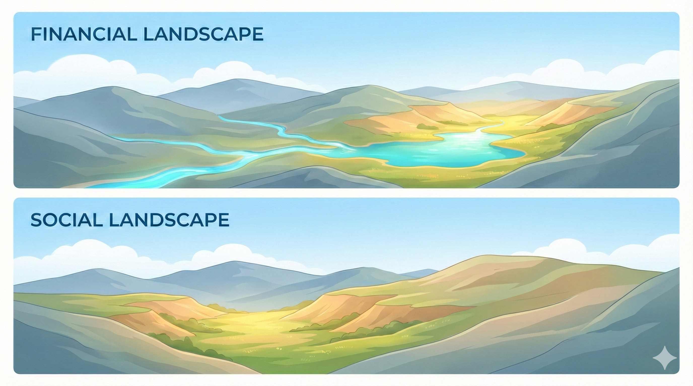
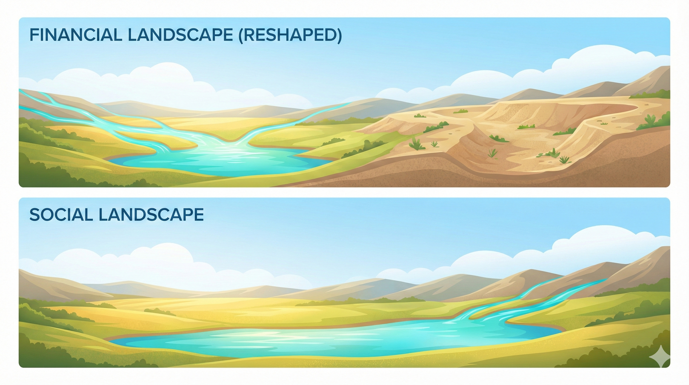
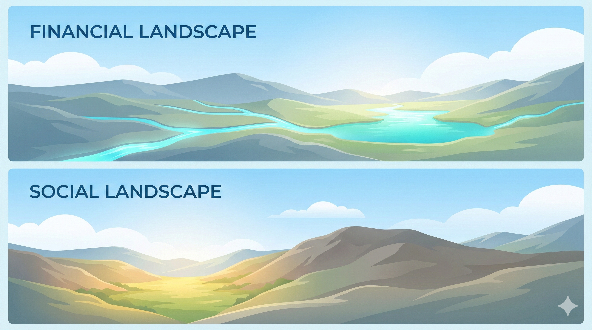

<!DOCTYPE html>
<html lang="en">
<head>
    <meta charset="UTF-8">
    <meta name="viewport" content="width=device-width, initial-scale=1.0">
    <title>The Impact Financing Framework | A Unified Theory of Market Intervention</title>
    <meta name="description" content="A practical guide to designing market interventions that redirect private investment toward social good. Learn to diagnose market failures and choose the right tools—whether you work in health, climate, or development.">
    <meta name="keywords" content="impact finance, market shaping, blended finance, carbon finance, development finance, social impact, market intervention">
    <meta name="author" content="Impact Financing Framework">

    <!-- Open Graph -->
    <meta property="og:title" content="The Impact Financing Framework">
    <meta property="og:description" content="A practical guide to designing market interventions that work. Learn to diagnose market failures and redirect capital toward social good.">
    <meta property="og:type" content="website">
    <meta property="og:url" content="https://impactfinancingframework.org">

    <!-- Favicon - Blue "I" matching site branding -->
    <link rel="icon" type="image/svg+xml" href="data:image/svg+xml,%3Csvg xmlns='http://www.w3.org/2000/svg' viewBox='0 0 32 32'%3E%3Cdefs%3E%3ClinearGradient id='g' x1='0%25' y1='0%25' x2='100%25' y2='100%25'%3E%3Cstop offset='0%25' stop-color='%231e3a8a'/%3E%3Cstop offset='100%25' stop-color='%231d4ed8'/%3E%3C/linearGradient%3E%3C/defs%3E%3Crect width='32' height='32' rx='6' fill='url(%23g)'/%3E%3Ctext x='50%25' y='50%25' dominant-baseline='central' text-anchor='middle' font-family='Georgia,serif' font-size='20' font-weight='bold' fill='white'%3EI%3C/text%3E%3C/svg%3E">

    <!-- React & ReactDOM -->
    <script crossorigin src="https://unpkg.com/react@18/umd/react.production.min.js"></script>
    <script crossorigin src="https://unpkg.com/react-dom@18/umd/react-dom.production.min.js"></script>
    <script src="https://unpkg.com/@babel/standalone/babel.min.js"></script>

    <!-- Tailwind CSS -->
    <script src="https://cdn.tailwindcss.com"></script>
    <script>
        tailwind.config = {
            theme: {
                extend: {
                    colors: {
                        slate: {
                            50: '#f8fafc', 100: '#f1f5f9', 200: '#e2e8f0', 300: '#cbd5e1',
                            400: '#94a3b8', 500: '#64748b', 600: '#475569', 700: '#334155',
                            800: '#1e293b', 850: '#172033', 900: '#0f172a', 950: '#020617'
                        },
                        blue: { 600: '#2563eb', 700: '#1d4ed8', 800: '#1e40af', 900: '#1e3a8a' },
                        emerald: { 500: '#10b981', 600: '#059669', 700: '#047857' },
                        amber: { 500: '#f59e0b', 600: '#d97706' }
                    },
                    fontFamily: {
                        sans: ['Inter', 'system-ui', 'sans-serif'],
                        serif: ['Playfair Display', 'Georgia', 'serif'],
                    }
                }
            }
        }
    </script>

    <!-- Google Fonts -->
    <link rel="preconnect" href="https://fonts.googleapis.com">
    <link rel="preconnect" href="https://fonts.gstatic.com" crossorigin>
    <link href="https://fonts.googleapis.com/css2?family=Inter:wght@300;400;500;600;700&family=Playfair+Display:ital,wght@0,400;0,500;0,600;0,700;1,400&display=swap" rel="stylesheet">

    <style>
        * { box-sizing: border-box; }
        body { font-family: 'Inter', sans-serif; background: #ffffff; color: #334155; line-height: 1.6; }
        h1, h2, h3, h4, h5 { font-family: 'Playfair Display', serif; line-height: 1.2; }

        /* Smooth scrolling */
        html { scroll-behavior: smooth; }

        /* Custom scrollbar */
        ::-webkit-scrollbar { width: 8px; }
        ::-webkit-scrollbar-track { background: #f1f5f9; }
        ::-webkit-scrollbar-thumb { background: #cbd5e1; border-radius: 4px; }
        ::-webkit-scrollbar-thumb:hover { background: #94a3b8; }

        /* Animations */
        @keyframes fadeInUp {
            from { opacity: 0; transform: translateY(20px); }
            to { opacity: 1; transform: translateY(0); }
        }
        @keyframes fadeIn {
            from { opacity: 0; }
            to { opacity: 1; }
        }
        .animate-fade-in-up { animation: fadeInUp 0.6s ease-out forwards; }
        .animate-fade-in { animation: fadeIn 0.4s ease-out forwards; }

        /* Stagger delays */
        .delay-100 { animation-delay: 100ms; }
        .delay-200 { animation-delay: 200ms; }
        .delay-300 { animation-delay: 300ms; }
        .delay-400 { animation-delay: 400ms; }

        /* Diagram styling */
        .diagram-container {
            background: linear-gradient(135deg, #f8fafc 0%, #f1f5f9 100%);
            border: 1px solid #e2e8f0;
            border-radius: 12px;
            padding: 2rem;
            margin: 2rem 0;
        }

        /* Card hover effects */
        .card-hover {
            transition: all 0.3s ease;
        }
        .card-hover:hover {
            transform: translateY(-4px);
            box-shadow: 0 20px 40px -12px rgba(0, 0, 0, 0.1);
        }

        /* Gradient text */
        .gradient-text {
            background: linear-gradient(135deg, #1e3a8a 0%, #047857 100%);
            -webkit-background-clip: text;
            -webkit-text-fill-color: transparent;
            background-clip: text;
        }

        /* Navigation active indicator */
        .nav-indicator {
            position: absolute;
            bottom: -2px;
            left: 0;
            right: 0;
            height: 2px;
            background: #1e3a8a;
            transform: scaleX(0);
            transition: transform 0.2s ease;
        }
        .nav-item:hover .nav-indicator,
        .nav-item.active .nav-indicator {
            transform: scaleX(1);
        }

        /* Spectrum bars */
        .spectrum-bar {
            height: 8px;
            border-radius: 4px;
            position: relative;
        }
        .spectrum-point {
            position: absolute;
            top: 50%;
            transform: translate(-50%, -50%);
            width: 20px;
            height: 20px;
            background: white;
            border: 3px solid currentColor;
            border-radius: 50%;
            cursor: pointer;
            transition: all 0.2s ease;
        }
        .spectrum-point:hover {
            transform: translate(-50%, -50%) scale(1.2);
            box-shadow: 0 4px 12px rgba(0,0,0,0.15);
        }

        /* Table styling */
        .data-table th {
            background: #f8fafc;
            font-weight: 600;
            text-transform: uppercase;
            font-size: 0.7rem;
            letter-spacing: 0.05em;
            color: #64748b;
        }
        .data-table td {
            font-size: 0.875rem;
        }
        .data-table tr:hover td {
            background: #f8fafc;
        }

        /* Tag styling */
        .tag {
            display: inline-flex;
            align-items: center;
            padding: 0.25rem 0.75rem;
            border-radius: 9999px;
            font-size: 0.7rem;
            font-weight: 600;
            text-transform: uppercase;
            letter-spacing: 0.03em;
        }
        .tag-mode1 { background: #dbeafe; color: #1e40af; }
        .tag-mode2 { background: #d1fae5; color: #047857; }
        .tag-hybrid { background: #fef3c7; color: #b45309; }

        /* Mechanism chip styling */
        .chip {
            display: inline-flex;
            align-items: center;
            padding: 0.125rem 0.5rem;
            border-radius: 9999px;
            font-size: 0.65rem;
            font-weight: 500;
            line-height: 1.4;
            white-space: nowrap;
        }
        .chip-cost { background: #dbeafe; color: #1e3a8a; }
        .chip-margin { background: #d1fae5; color: #064e3b; }
        .chip-transfer-t { background: #fef3c7; color: #92400e; }
        .chip-transfer-p { background: #fed7aa; color: #7c2d12; }
        .chip-innovation { background: #ede9fe; color: #5b21b6; }
        .chip-outcome { background: #fce7f3; color: #9d174d; }
        .chip-structural { background: #f1f5f9; color: #334155; }

        /* Blockquote */
        blockquote {
            border-left: 4px solid #1e3a8a;
            padding-left: 1.5rem;
            margin: 1.5rem 0;
            font-style: italic;
            color: #475569;
        }

        /* Hide scrollbar for TOC */
        .no-scrollbar::-webkit-scrollbar { display: none; }
        .no-scrollbar { -ms-overflow-style: none; scrollbar-width: none; }

        /* Print styles */
        @media print {
            .no-print { display: none !important; }
            body { font-size: 12pt; }
        }
    </style>
</head>
<body>
    <div id="root"></div>

    <script type="text/babel">
        const { useState, useEffect, useMemo, useCallback, useRef } = React;

        // ============================================
        // TOOLTIP COMPONENT FOR JARGON
        // ============================================

        const Tooltip = ({ term, children, definition }) => {
            const [show, setShow] = useState(false);
            return (
                <span className="relative inline-block">
                    <span
                        className="border-b border-dotted border-slate-400 cursor-help text-slate-700"
                        onMouseEnter={() => setShow(true)}
                        onMouseLeave={() => setShow(false)}
                        onClick={() => setShow(!show)}
                    >
                        {children || term}
                    </span>
                    {show && (
                        <span className="absolute z-50 bottom-full left-1/2 -translate-x-1/2 mb-2 w-64 p-3 bg-slate-800 text-white text-xs rounded-lg shadow-lg animate-fade-in">
                            <strong className="text-blue-300">{term}:</strong> {definition}
                            <span className="absolute top-full left-1/2 -translate-x-1/2 border-4 border-transparent border-t-slate-800"></span>
                        </span>
                    )}
                </span>
            );
        };

        // Predefined tooltips for common terms
        const TOOLTIPS = {
            additionality: "The criterion that an intervention causes outcomes that would not have occurred otherwise. Without additionality, public resources merely substitute for private investment.",
            concessional: "Financing at terms more favorable than market rates—lower interest, longer tenor, higher risk tolerance. The difference between concessional and market terms is an implicit subsidy.",
            guarantee: "A commitment to cover losses under specified conditions. Guarantees transfer risk from those unwilling to bear it to entities that can absorb it.",
            externality: "A cost or benefit affecting parties not involved in a transaction. Pollution imposes costs on non-participants; vaccination generates benefits for the unvaccinated.",
            crowdingOut: "When public or philanthropic capital displaces private investment that would have occurred anyway—the opposite of additionality.",
            terraforming: "Permanently restructuring economic incentives so that profitable activities align with socially beneficial outcomes.",
            catalyticCapital: "Capital accepting below-market returns or elevated risk to demonstrate market viability, thereby unlocking subsequent commercial investment.",
            impactBond: "A structure where investors provide upfront capital; outcome funders repay with returns contingent on independently verified outcome achievement."
        };

        // ============================================
        // DATA LAYER
        // ============================================

        const INSTRUMENTS_DATABASE = [
            // BLOCKED FLOW - Demand Side
            { id: 'vg', name: "Volume Guarantee", category: "Transitional Access Gap", subcategory: "Demand Risk", sector: ["Health", "Energy"], mechanisms: ["risk-transfer", "scale", "competition"],
              description: "A legally binding commitment to purchase a minimum quantity if market demand falls short. The guarantor absorbs demand-side risk, enabling supplier investment.",
              riskTransfer: 0.5, costOfCapital: 0.1, performanceTrigger: 0.4,
              mechanism: "Contingent liability that converts to purchase obligation only if trigger conditions are met.",
              realExample: "Gavi's pneumococcal AMC guaranteed $1.5B in purchases, enabling manufacturers to invest in production capacity.",
              strengths: ["Low upfront capital requirement", "Preserves market incentives", "Self-liquidating if market develops"],
              limitations: ["Requires credible demand forecasting", "May distort market signals if poorly calibrated"] },

            { id: 'amc', name: "Advance Market Commitment", category: "Transitional Access Gap", subcategory: "Demand Risk", sector: ["Health", "Climate"], mechanisms: ["risk-transfer", "scale", "competition"],
              description: "A binding commitment to subsidize future purchases at a guaranteed price, creating a synthetic market for products that don't yet exist.",
              riskTransfer: 0.7, costOfCapital: 0.3, performanceTrigger: 0.5,
              mechanism: "Donors commit funds to a pool that pays the difference between a ceiling price and the target price for qualifying products.",
              realExample: "The pneumococcal AMC committed $1.5B to guarantee a $7/dose price, accelerating vaccine development by 5+ years.",
              strengths: ["Pulls forward R&D investment", "Creates price certainty for manufacturers", "Outcome-linked spending"],
              limitations: ["Requires significant upfront commitment", "Complex to design and administer"] },

            { id: 'offtake', name: "Offtake Agreement", category: "Transitional Access Gap", subcategory: "Demand Risk", sector: ["Energy", "Agriculture"], mechanisms: ["risk-transfer", "scale"],
              description: "A long-term contract where a buyer commits to purchase a significant portion of a project's output, providing revenue certainty that enables project financing.",
              riskTransfer: 0.6, costOfCapital: 0.2, performanceTrigger: 0.3,
              mechanism: "Contractual obligation to purchase specified quantities at agreed prices over a multi-year period.",
              realExample: "Corporate renewable energy PPAs now exceed 30GW annually, enabling utility-scale solar and wind projects.",
              strengths: ["Bankable revenue stream", "Enables project finance", "Market-rate transactions"],
              limitations: ["Requires creditworthy offtaker", "Long-term price exposure"] },

            { id: 'pooled', name: "Pooled Procurement", category: "Transitional Access Gap", subcategory: "Demand Risk", sector: ["Health", "General"], mechanisms: ["competition", "disintermediation"],
              description: "Aggregating demand from multiple buyers to negotiate better terms, reduce transaction costs, and create market power.",
              riskTransfer: 0.3, costOfCapital: 0.05, performanceTrigger: 0.2,
              mechanism: "Central procurement agent negotiates on behalf of multiple buyers, consolidating purchasing power.",
              realExample: "The Global Fund's Pooled Procurement Mechanism saves 20-40% on HIV/TB/malaria commodities for 100+ countries.",
              strengths: ["Significant price reductions", "Quality assurance", "Reduced transaction costs"],
              limitations: ["Requires coordination among buyers", "May reduce supplier diversity"] },

            { id: 'subscription', name: "Subscription Model", category: "Transitional Access Gap", subcategory: "Demand Risk", sector: ["Health", "Technology"], mechanisms: ["risk-transfer"],
              description: "Fixed periodic payments for access to products or services, decoupling revenue from per-unit consumption and providing predictable income.",
              riskTransfer: 0.4, costOfCapital: 0.15, performanceTrigger: 0.25,
              mechanism: "Buyer pays flat fee for access rights regardless of actual utilization within period.",
              realExample: "Netflix model applied to antibiotics: governments pay annual fee for access to novel antimicrobials regardless of use.",
              strengths: ["Revenue predictability", "Removes volume-based incentive distortions", "Simplifies planning"],
              limitations: ["Requires accurate value estimation", "May lead to under/over-utilization"] },

            // BLOCKED FLOW - Price & Liquidity
            { id: 'buydown', name: "Price Buy-down / Rebate", category: "Transitional Access Gap", subcategory: "Price", sector: ["Health", "Energy", "Agriculture"], mechanisms: ["transfer-payment-transitional"],
              description: "Direct subsidy that reduces the effective price for end buyers, bridging the gap between willingness-to-pay and production cost.",
              riskTransfer: 0.8, costOfCapital: 0.9, performanceTrigger: 0.2,
              mechanism: "Third party pays portion of purchase price directly to supplier or reimburses buyer.",
              realExample: "Unitaid's malaria RDT subsidies reduced prices from $1.50 to $0.50, enabling universal testing policies.",
              strengths: ["Immediate price reduction", "Simple to implement", "Directly addresses affordability"],
              limitations: ["Ongoing cost burden", "May suppress natural price discovery", "Exit strategy challenges"] },

            { id: 'pricefloor', name: "Price Floor / Ceiling", category: "Transitional Access Gap", subcategory: "Price", sector: ["Agriculture", "Energy"], mechanisms: ["risk-transfer"],
              description: "Contractual bounds on price volatility, reducing risk for both buyers (ceiling) and sellers (floor).",
              riskTransfer: 0.5, costOfCapital: 0.1, performanceTrigger: 0.3,
              mechanism: "Guarantor commits to buy at floor price or sell at ceiling price if market breaches bounds.",
              realExample: "Feed-in tariffs with price floors enabled Germany's solar industry to scale before reaching grid parity.",
              strengths: ["Reduces volatility risk", "Enables long-term planning", "Can be self-financing"],
              limitations: ["May require significant reserves", "Can distort market signals"] },

            { id: 'buffer', name: "Buffer Stock / Strategic Reserve", category: "Transitional Access Gap", subcategory: "Supply Security", sector: ["Health", "Agriculture", "Energy"], mechanisms: ["risk-transfer"],
              description: "Physical inventory held to smooth supply disruptions and price volatility, providing security of supply.",
              riskTransfer: 0.6, costOfCapital: 0.4, performanceTrigger: 0.1,
              mechanism: "Central authority maintains inventory, releasing stock during shortages or absorbing during gluts.",
              realExample: "US Strategic Petroleum Reserve holds 700M barrels to buffer oil supply shocks.",
              strengths: ["Physical supply security", "Price stabilization", "Emergency response capability"],
              limitations: ["High carrying costs", "Opportunity cost of capital", "Requires storage infrastructure"] },

            // BLOCKED FLOW - Supply/Scale
            { id: 'concessional', name: "Concessional Debt", category: "Transitional Access Gap", subcategory: "Supply/Scale", sector: ["Development", "Infrastructure"], mechanisms: ["capital-cost-reduction"],
              description: "Below-market-rate loans with extended tenors or grace periods, reducing the cost of capital for projects with positive externalities.",
              riskTransfer: 0.3, costOfCapital: 0.4, performanceTrigger: 0.1,
              mechanism: "Development finance institution provides loans at rates below market, with grant element covering the difference.",
              realExample: "IDA provides 40-year loans at 0.75% interest to lowest-income countries for infrastructure.",
              strengths: ["Preserves repayment discipline", "Lower subsidy cost than grants", "Builds creditworthiness"],
              limitations: ["Still requires repayment capacity", "May crowd out commercial lending"] },

            { id: 'firstloss', name: "First-Loss Capital / Impact Investment", category: "Transitional Access Gap", subcategory: "Supply/Scale", sector: ["Finance", "Impact Investing", "Health"], mechanisms: ["capital-cost-reduction", "risk-transfer"],
              description: "Junior capital that absorbs initial losses, protecting senior investors and catalyzing commercial capital into impact investments. A core structure within broader impact investing, where debt, equity, or blended instruments are deployed to achieve both social impact and financial return.",
              riskTransfer: 0.8, costOfCapital: 0.7, performanceTrigger: 0.5,
              mechanism: "Donor or DFI provides subordinated tranche that takes first losses up to specified threshold, lowering the risk profile for commercial investors and enabling capital to flow to higher-impact opportunities.",
              realExample: "USAID DCA guarantees have mobilized $6B+ in private lending by covering 50% first-loss. Adjuvant Capital uses impact investment structures to support health product development.",
              strengths: ["High leverage ratio", "Crowds in commercial capital", "Demonstrates market viability", "Enables risk-adjusted returns for impact"],
              limitations: ["Moral hazard if poorly structured", "May not address underlying risks", "Requires sophisticated structuring"] },

            { id: 'forgivable', name: "Forgivable Loan", category: "Transitional Access Gap", subcategory: "Supply/Scale", sector: ["Health", "Social Enterprise"], mechanisms: ["capital-cost-reduction", "risk-transfer"],
              description: "Debt that converts to grant if specific success metrics are achieved, combining accountability with outcome incentives.",
              riskTransfer: 0.6, costOfCapital: 0.5, performanceTrigger: 0.7,
              mechanism: "Loan principal and/or interest forgiven upon verified achievement of agreed milestones.",
              realExample: "PEPFAR's forgivable loans to local organizations convert to grants upon achieving HIV treatment targets.",
              strengths: ["Aligns incentives with outcomes", "Maintains accountability", "Flexible capital structure"],
              limitations: ["Complex verification requirements", "May distort behavior toward measurable outcomes"] },

            { id: 'microfinance', name: "Microfinance", category: "Transitional Access Gap", subcategory: "Supply/Scale", sector: ["Economic Development", "Agriculture"], mechanisms: ["capital-cost-reduction"],
              description: "Small loans to underserved entrepreneurs using group liability, social collateral, or alternative credit assessment to overcome traditional barriers.",
              riskTransfer: 0.35, costOfCapital: 0.45, performanceTrigger: 0.15,
              mechanism: "Specialized lenders use innovative underwriting to serve borrowers excluded from formal banking.",
              realExample: "Grameen Bank pioneered group lending, serving 9M+ borrowers with 97% repayment rates.",
              strengths: ["Financial inclusion", "Self-sustaining business model", "Empowers entrepreneurs"],
              limitations: ["High interest rates due to costs", "Risk of over-indebtedness"] },

            // BLOCKED FLOW - Capability/Information
            { id: 'ta', name: "Technical Assistance", category: "Transitional Access Gap", subcategory: "Capability", sector: ["General"], mechanisms: ["process-improvement"],
              description: "Expert support to build capabilities in manufacturing, operations, governance, or regulatory compliance that enable market participation.",
              riskTransfer: 0.2, costOfCapital: 0.8, performanceTrigger: 0.15,
              mechanism: "Experts work alongside organizations to transfer knowledge and build sustainable capabilities.",
              realExample: "CHAI's manufacturing support helped reduce ARV production costs by 50% through process optimization.",
              strengths: ["Builds lasting capacity", "Addresses root causes", "High leverage potential"],
              limitations: ["Time-intensive", "Dependent on absorptive capacity", "Hard to measure impact"] },

            { id: 'marketintel', name: "Market Intelligence", category: "Transitional Access Gap", subcategory: "Information", sector: ["General"], mechanisms: ["competition", "disintermediation"],
              description: "Public provision of market data to reduce information asymmetries and enable better decision-making by all actors.",
              riskTransfer: 0.1, costOfCapital: 0.6, performanceTrigger: 0.1,
              mechanism: "Third party collects, analyzes, and disseminates market information as public good.",
              realExample: "CHAI's ARV price reports enabled countries to negotiate 30%+ better prices using benchmark data.",
              strengths: ["Public good with high spillovers", "Relatively low cost", "Enables market efficiency"],
              limitations: ["Requires ongoing investment", "May face data access challenges"] },

            { id: 'procguarantee', name: "Procurement Guarantee", category: "Transitional Access Gap", subcategory: "Liquidity", sector: ["Health"], mechanisms: ["risk-transfer"],
              description: "Backs procurement agents to place orders before donor funds arrive, bridging timing gaps in complex multi-stakeholder supply chains.",
              riskTransfer: 0.5, costOfCapital: 0.15, performanceTrigger: 0.2,
              mechanism: "Guarantor commits to cover orders if expected funding fails to materialize.",
              realExample: "UNICEF uses procurement guarantees to order vaccines 6+ months before Gavi funds are disbursed.",
              strengths: ["Enables advance planning", "Reduces supply chain volatility", "Low-cost liquidity"],
              limitations: ["Requires credible funding pipeline", "Timing/coordination complexity"] },

            { id: 'paymentguarantee', name: "Payment Guarantee", category: "Transitional Access Gap", subcategory: "Liquidity", sector: ["Health", "Development"], mechanisms: ["risk-transfer"],
              description: "Guarantee facility provided to sellers (suppliers, service providers) ensuring customer payment will be received on time and in full, with the guarantor assuming the risk of default.",
              riskTransfer: 0.6, costOfCapital: 0.15, performanceTrigger: 0.2,
              mechanism: "Guarantor commits to pay the seller if the buyer defaults or delays payment beyond agreed terms, reducing counterparty risk for suppliers entering new or uncertain markets.",
              realExample: "MedAccess and World Bank provide payment guarantees to suppliers entering LMIC markets where buyer creditworthiness is uncertain.",
              strengths: ["Enables suppliers to serve higher-risk markets", "Reduces pricing premium for perceived risk", "Builds supplier confidence for market entry"],
              limitations: ["Requires robust verification of delivery", "May mask underlying buyer capacity issues"] },

            { id: 'workingcapital', name: "Working Capital Facility", category: "Transitional Access Gap", subcategory: "Liquidity", sector: ["Health", "Development", "Social Enterprise"], mechanisms: ["capital-cost-reduction", "risk-transfer"],
              description: "Low-cost loans for operating expenditures provided to suppliers, procurers, wholesalers, or distributors with liquidity needs, enabling them to manage day-to-day operations while pursuing access-friendly terms.",
              riskTransfer: 0.4, costOfCapital: 0.2, performanceTrigger: 0.2,
              mechanism: "Lender provides short-term debt at below-market rates, often in exchange for commitments on pricing, geographic coverage, or supply security.",
              realExample: "MedAccess and CDC Group provide working capital facilities to generic drug manufacturers serving LMICs, enabling them to maintain production while awaiting payment.",
              strengths: ["Addresses cash flow timing mismatches", "Can be tied to access commitments", "Lower risk than equity investment"],
              limitations: ["Requires repayment capacity", "May not address fundamental business model issues"] },

            { id: 'regincentive', name: "Regulatory Incentive", category: "Hybrid", subcategory: "Innovation", sector: ["Health", "Technology"], mechanisms: ["innovation-incentive"],
              description: "Rewards for developing products for specific patient populations or neglected health areas, including priority review vouchers, filing fee waivers, extended exclusivity, and tax credits.",
              riskTransfer: 0.3, costOfCapital: 0.2, performanceTrigger: 0.4,
              mechanism: "Regulatory authorities offer expedited review, reduced fees, or tradable vouchers to companies that develop products meeting predefined criteria for unmet needs.",
              realExample: "FDA Priority Review Vouchers for neglected tropical diseases can be sold for $100M+, creating R&D incentives. Filing fee waivers reduce barriers for smaller developers.",
              strengths: ["No upfront public expenditure", "Leverages existing regulatory infrastructure", "Creates transferable value"],
              limitations: ["Benefits may not flow to target populations", "Voucher value is unpredictable", "May distort R&D priorities toward voucher eligibility"] },

            // STRUCTURAL MISALIGNMENT - Externality Pricing
            { id: 'carbontax', name: "Carbon Tax", category: "Structural Misalignment", subcategory: "Externality Pricing", sector: ["Climate", "Energy"], mechanisms: ["structural"],
              description: "A fee imposed on greenhouse gas emissions, internalizing the social cost of carbon into market prices.",
              riskTransfer: 0.1, costOfCapital: 0.0, performanceTrigger: 0.2,
              mechanism: "Government charges per-ton fee on emissions, collected at source (fuel production) or point of emission.",
              realExample: "British Columbia's carbon tax ($50/ton) reduced emissions 5-15% while economy grew faster than Canada average.",
              strengths: ["Price certainty", "Revenue generation", "Economy-wide coverage"],
              limitations: ["Political resistance", "Competitiveness concerns", "Regressive without rebates"] },

            { id: 'pigouvian', name: "Pigouvian Tax", category: "Structural Misalignment", subcategory: "Externality Pricing", sector: ["Environment", "Health"], mechanisms: ["structural"],
              description: "A tax set equal to the marginal external cost of an activity, achieving the socially optimal level of the externality.",
              riskTransfer: 0.1, costOfCapital: 0.0, performanceTrigger: 0.3,
              mechanism: "Tax rate calibrated to external damage per unit, shifting private costs to match social costs.",
              realExample: "Tobacco taxes set to cover healthcare and productivity costs of smoking-related illness.",
              strengths: ["Economically efficient", "Internalizes externalities", "Generates revenue for mitigation"],
              limitations: ["Requires accurate externality measurement", "May be politically unpopular"] },

            // WRONG DESTINATION - Cap & Trade
            { id: 'ets', name: "Emissions Trading System (ETS)", category: "Structural Misalignment", subcategory: "Cap-and-Trade", sector: ["Climate"], mechanisms: ["structural"],
              description: "A market-based system where a cap is set on total emissions and tradable permits are allocated or auctioned.",
              riskTransfer: 0.2, costOfCapital: 0.1, performanceTrigger: 0.6,
              mechanism: "Regulators set declining emissions cap; firms must hold permits for each ton emitted; trading enables price discovery.",
              realExample: "EU ETS covers 40% of EU emissions; permit prices reached €100/ton in 2023, driving coal-to-gas switching.",
              strengths: ["Quantity certainty", "Cost-effective abatement", "Market flexibility"],
              limitations: ["Price volatility", "Complex administration", "Risk of over-allocation"] },

            { id: 'waterrights', name: "Water Rights Trading", category: "Structural Misalignment", subcategory: "Cap-and-Trade", sector: ["Environment", "Agriculture"], mechanisms: ["structural"],
              description: "Market for buying and selling water access rights, enabling efficient allocation of scarce water resources.",
              riskTransfer: 0.3, costOfCapital: 0.1, performanceTrigger: 0.4,
              mechanism: "Rights to extract/use water allocated and made tradable; price signals reveal scarcity value.",
              realExample: "Australia's Murray-Darling Basin water market trades $2B+ annually, reallocating water to highest-value uses.",
              strengths: ["Efficient allocation", "Flexibility for users", "Price discovery"],
              limitations: ["Baseline allocation challenges", "Environmental flow protection needed"] },

            // WRONG DESTINATION - Tradable Credits
            { id: 'vcc', name: "Voluntary Carbon Credit", category: "Structural Misalignment", subcategory: "Tradable Credits", sector: ["Climate"], mechanisms: ["transfer-payment-permanent"],
              description: "Certificates representing verified emission reductions or removals, purchased voluntarily by companies or individuals.",
              riskTransfer: 0.5, costOfCapital: 0.3, performanceTrigger: 0.8,
              mechanism: "Projects reduce/remove emissions; third parties verify and issue credits; buyers retire credits against footprint.",
              realExample: "Voluntary carbon market reached $2B in 2022; prices range from $5-1500/ton depending on quality.",
              strengths: ["Channels private capital to climate action", "Flexibility", "Additionality-focused"],
              limitations: ["Quality concerns", "Additionality verification challenges", "No cap on total emissions"] },

            { id: 'biodiversity', name: "Biodiversity Credit", category: "Structural Misalignment", subcategory: "Tradable Credits", sector: ["Environment"], mechanisms: ["transfer-payment-permanent"],
              description: "Units representing measurable improvements in biodiversity, creating financial incentives for conservation and restoration.",
              riskTransfer: 0.5, costOfCapital: 0.3, performanceTrigger: 0.85,
              mechanism: "Projects demonstrate biodiversity gains; credits issued for verified improvements; purchased by companies or governments.",
              realExample: "Emerging markets in Australia and UK; Wallacea Trust piloting in Indonesia with $30/credit prices.",
              strengths: ["New revenue stream for conservation", "Outcome-focused", "Scalable"],
              limitations: ["Measurement complexity", "Early-stage market", "Baseline challenges"] },

            { id: 'rec', name: "Renewable Energy Certificate (REC)", category: "Structural Misalignment", subcategory: "Tradable Credits", sector: ["Energy"], mechanisms: ["transfer-payment-permanent"],
              description: "Proof that one megawatt-hour of electricity was generated from renewable sources, tradable separately from the physical electricity.",
              riskTransfer: 0.3, costOfCapital: 0.1, performanceTrigger: 0.3,
              mechanism: "Generators receive RECs for each MWh; buyers purchase to meet mandates or voluntary commitments.",
              realExample: "US REC market exceeds $10B annually; drives 50%+ of US corporate renewable procurement.",
              strengths: ["Simple verification", "Liquid market", "Enables claims without physical delivery"],
              limitations: ["Additionality debates", "Price volatility", "Geographic mismatch concerns"] },

            // WRONG DESTINATION - Outcome-Based
            { id: 'dib', name: "Development Impact Bond (DIB)", category: "Structural Misalignment", subcategory: "Outcome-Based", sector: ["Development", "Health", "Education"], mechanisms: ["outcome-contingency"],
              description: "Investors provide upfront capital; outcome funders repay with return only if verified social outcomes are achieved.",
              riskTransfer: 0.7, costOfCapital: 0.6, performanceTrigger: 0.95,
              mechanism: "Private investors fund service delivery; independent verification of outcomes; donor pays based on results.",
              realExample: "Educate Girls DIB in Rajasthan: investors funded girl education; donor paid $1.7M for 116% of target outcomes.",
              strengths: ["Shifts risk from donors", "Aligns incentives", "Drives innovation in delivery"],
              limitations: ["High transaction costs", "Complex contracting", "Limited outcome measurability"] },

            { id: 'rbf', name: "Results-Based Financing (RBF)", category: "Structural Misalignment", subcategory: "Outcome-Based", sector: ["Health", "Education"], mechanisms: ["outcome-contingency"],
              description: "Payments to service providers linked to verified outputs or outcomes rather than inputs.",
              riskTransfer: 0.5, costOfCapital: 0.5, performanceTrigger: 0.75,
              mechanism: "Funder commits to pay per verified result; provider has flexibility in how to achieve results.",
              realExample: "GAVI's ISS provides performance payments to countries based on vaccination coverage improvements.",
              strengths: ["Focus on results", "Provider autonomy", "Accountability"],
              limitations: ["Gaming risks", "May neglect harder-to-measure outcomes", "Verification costs"] },

            { id: 'sib', name: "Social Impact Bond (SIB)", category: "Structural Misalignment", subcategory: "Outcome-Based", sector: ["Social Services"], mechanisms: ["outcome-contingency"],
              description: "Government pays investors for improved social outcomes, typically in areas like recidivism reduction, homelessness, or employment.",
              riskTransfer: 0.7, costOfCapital: 0.6, performanceTrigger: 0.9,
              mechanism: "Investors fund preventive services; government pays if outcomes materialize and generate savings.",
              realExample: "Peterborough SIB reduced reoffending by 9%; investors earned 3% return funded by criminal justice savings.",
              strengths: ["Shifts delivery risk from government", "Encourages prevention investment", "Cross-sector collaboration"],
              limitations: ["Selection bias risks", "Attribution challenges", "High structuring costs"] },

            // WRONG DESTINATION - Structural
            { id: 'fit', name: "Feed-in Tariff (FIT)", category: "Structural Misalignment", subcategory: "Structural Pricing", sector: ["Energy"], mechanisms: ["transfer-payment-transitional"],
              description: "Guaranteed above-market price for renewable electricity over long periods, providing revenue certainty that enables investment.",
              riskTransfer: 0.7, costOfCapital: 0.3, performanceTrigger: 0.25,
              mechanism: "Utilities required to purchase renewable electricity at administratively set prices for 15-20 years.",
              realExample: "Germany's FIT drove solar PV from 0.1% to 8% of generation, reducing global solar costs 90%.",
              strengths: ["Investment certainty", "Technology-specific support", "Proven track record"],
              limitations: ["Can be expensive if prices set too high", "Requires adjustment as costs fall"] },

            { id: 'differential', name: "Differential / Tiered Pricing", category: "Structural Misalignment", subcategory: "Structural Pricing", sector: ["Health", "General"], mechanisms: ["structural"],
              description: "Charging different prices to different markets based on ability to pay, enabling access while maintaining producer viability.",
              riskTransfer: 0.3, costOfCapital: 0.2, performanceTrigger: 0.2,
              mechanism: "Sellers segment markets and set prices proportional to income levels or purchasing power.",
              realExample: "Pharma tiered pricing provides HIV drugs at $75/year in LICs vs $30,000/year in HICs.",
              strengths: ["Expands access", "Cross-subsidization", "Market-sustainable"],
              limitations: ["Requires market segmentation", "Arbitrage risks", "Equity concerns"] },

            // HYBRID / CROSS-CUTTING
            { id: 'parametric', name: "Parametric Insurance", category: "Hybrid", subcategory: "Risk Transfer", sector: ["Climate", "Agriculture"], mechanisms: ["risk-transfer"],
              description: "Insurance that pays out automatically when a pre-defined parameter (rainfall, wind speed, earthquake magnitude) is triggered.",
              riskTransfer: 0.8, costOfCapital: 0.2, performanceTrigger: 0.4,
              mechanism: "Objective index triggers payout without loss assessment; reduces moral hazard and speeds payment.",
              realExample: "African Risk Capacity provides drought insurance paying $500M+ to Sahel countries within 2-4 weeks of trigger.",
              strengths: ["Rapid payout", "Low transaction costs", "Objective triggers"],
              limitations: ["Basis risk (trigger vs actual loss)", "Index design complexity"] },

            { id: 'prize', name: "Innovation Prize / X-Prize", category: "Hybrid", subcategory: "Innovation", sector: ["Technology", "Health"], mechanisms: ["innovation-incentive"],
              description: "Lump-sum reward for first to achieve defined technical or scientific milestone, pulling innovation toward specified goals.",
              riskTransfer: 0.9, costOfCapital: 0.8, performanceTrigger: 0.99,
              mechanism: "Sponsor commits prize purse; competitors self-fund R&D; winner receives prize upon verified achievement.",
              realExample: "XPRIZE Ansari ($10M) catalyzed commercial spaceflight; Longitude Prize ($10M) targets antibiotic resistance diagnostics.",
              strengths: ["High leverage", "Outcome-focused", "Attracts diverse solvers"],
              limitations: ["Winner-take-all demotivates some", "Prize must be calibrated to challenge"] },

            { id: 'convertible', name: "Convertible Grant", category: "Hybrid", subcategory: "Equity-Linked", sector: ["Social Enterprise", "Startups"], mechanisms: ["innovation-incentive", "capital-cost-reduction"],
              description: "Grant that converts to equity if the enterprise succeeds, allowing philanthropic capital to participate in upside.",
              riskTransfer: 0.6, costOfCapital: 0.7, performanceTrigger: 0.6,
              mechanism: "Grant provided with conversion terms; if company raises equity at certain valuation, grant converts to shares.",
              realExample: "Omidyar Network uses convertible grants for early-stage social enterprises with unclear business models.",
              strengths: ["Patient capital", "Recycling potential", "Aligned incentives"],
              limitations: ["Complex legal structure", "Valuation challenges"] },

            { id: 'taxcredit', name: "Tax Credit (ITC/PTC)", category: "Hybrid", subcategory: "Fiscal", sector: ["Energy", "Housing"], mechanisms: ["transfer-payment-transitional"],
              description: "Reduction in tax liability for investment in or production of specified activities, effectively subsidizing through foregone revenue.",
              riskTransfer: 0.4, costOfCapital: 0.3, performanceTrigger: 0.25,
              mechanism: "Taxpayers reduce liability by percentage of investment (ITC) or per-unit production (PTC).",
              realExample: "US ITC/PTC drove 90%+ of US wind/solar deployment; IRA extends through 2032 with bonus credits.",
              strengths: ["Market-compatible", "Scalable", "Politically durable"],
              limitations: ["Benefits only taxpayers", "Revenue cost", "Requires tax capacity"] },

            { id: 'pdip', name: "Product Development Incentive Package", category: "Transitional Access Gap", subcategory: "Innovation", sector: ["Health"], mechanisms: ["risk-transfer", "process-improvement", "scale"],
              description: "Bundled support combining milestone payments, technical assistance, and market commitments to accelerate product development.",
              riskTransfer: 0.6, costOfCapital: 0.6, performanceTrigger: 0.6,
              mechanism: "Stage-gated funding tied to development milestones, with downstream market signals to ensure uptake.",
              realExample: "BARDA's CIADM program combines milestone funding with procurement commitments for medical countermeasures.",
              strengths: ["Addresses full development chain", "Reduces multiple risk types", "Tailored support"],
              limitations: ["Complex to administer", "Requires deep technical expertise"] },

            { id: 'crowdfund', name: "Advance Purchase / Crowdfunding", category: "Transitional Access Gap", subcategory: "Demand Risk", sector: ["Technology", "Social Enterprise", "Climate"], mechanisms: ["risk-transfer"],
              description: "End customers pre-pay for a product before it exists, providing working capital for development and de-risking production through demonstrated demand.",
              riskTransfer: 0.7, costOfCapital: 0.1, performanceTrigger: 0.5,
              mechanism: "Customers commit funds upfront in exchange for future delivery; funds finance R&D and initial production; product delivered upon completion.",
              realExample: "Kickstarter campaigns have funded $7B+ in creative and hardware projects; Fairphone used pre-orders to finance ethical smartphone production.",
              strengths: ["Validates demand before investment", "Customers bear development risk", "Creates engaged early-adopter community", "No equity dilution"],
              limitations: ["Requires compelling product vision", "Delivery delays damage reputation", "Limited scale for large capital needs", "Customer protection concerns"] }
        ];

        // Category definitions for filtering and display
        const CATEGORIES = {
            'Transitional Access Gap': { label: 'Transitional Access Gap', color: 'blue', description: 'Capital stuck behind a ridge - needs a temporary path through' },
            'Structural Misalignment': { label: 'Structural Misalignment', color: 'emerald', description: 'Capital flowing to toxic pit - needs terrain reshaping' },
            'Hybrid': { label: 'Hybrid', color: 'amber', description: 'Cross-cutting instruments' }
        };

        // Mechanism metadata: how each instrument actually moves the price
        const MECHANISMS = {
            'process-improvement': { label: 'Process improvement', chip: 'chip-cost', group: 'Cost reduction' },
            'scale': { label: 'Scale', chip: 'chip-cost', group: 'Cost reduction' },
            'capital-cost-reduction': { label: 'Capital cost', chip: 'chip-cost', group: 'Cost reduction' },
            'competition': { label: 'Competition', chip: 'chip-margin', group: 'Margin reduction' },
            'disintermediation': { label: 'Disintermediation', chip: 'chip-margin', group: 'Margin reduction' },
            'risk-transfer': { label: 'Risk transfer', chip: 'chip-margin', group: 'Margin reduction' },
            'transfer-payment-transitional': { label: 'Transfer (transitional)', chip: 'chip-transfer-t', group: 'Transfer payment' },
            'transfer-payment-permanent': { label: 'Transfer (permanent)', chip: 'chip-transfer-p', group: 'Transfer payment' },
            'innovation-incentive': { label: 'Innovation incentive', chip: 'chip-innovation', group: 'Innovation incentive' },
            'outcome-contingency': { label: 'Outcome-contingent', chip: 'chip-outcome', group: 'Outcome-contingent' },
            'structural': { label: 'Structural', chip: 'chip-structural', group: 'Structural' }
        };

        const SUBCATEGORIES = [
            'Demand Risk', 'Price', 'Supply Security', 'Supply/Scale', 'Capability',
            'Information', 'Liquidity', 'Innovation', 'Externality Pricing', 'Cap-and-Trade',
            'Tradable Credits', 'Outcome-Based', 'Structural Pricing', 'Risk Transfer',
            'Equity-Linked', 'Fiscal'
        ];

        const SECTORS = ['Health', 'Climate', 'Energy', 'Agriculture', 'Development',
                         'Finance', 'Environment', 'Education', 'Social Services', 'Technology'];

        // ============================================
        // UTILITY COMPONENTS
        // ============================================

        const Icon = ({ name, size = 20, className = '' }) => {
            const icons = {
                menu: <svg width={size} height={size} viewBox="0 0 24 24" fill="none" stroke="currentColor" strokeWidth="2"><line x1="3" y1="12" x2="21" y2="12"/><line x1="3" y1="6" x2="21" y2="6"/><line x1="3" y1="18" x2="21" y2="18"/></svg>,
                x: <svg width={size} height={size} viewBox="0 0 24 24" fill="none" stroke="currentColor" strokeWidth="2"><line x1="18" y1="6" x2="6" y2="18"/><line x1="6" y1="6" x2="18" y2="18"/></svg>,
                search: <svg width={size} height={size} viewBox="0 0 24 24" fill="none" stroke="currentColor" strokeWidth="2"><circle cx="11" cy="11" r="8"/><line x1="21" y1="21" x2="16.65" y2="16.65"/></svg>,
                filter: <svg width={size} height={size} viewBox="0 0 24 24" fill="none" stroke="currentColor" strokeWidth="2"><polygon points="22 3 2 3 10 12.46 10 19 14 21 14 12.46 22 3"/></svg>,
                chevronDown: <svg width={size} height={size} viewBox="0 0 24 24" fill="none" stroke="currentColor" strokeWidth="2"><polyline points="6 9 12 15 18 9"/></svg>,
                chevronRight: <svg width={size} height={size} viewBox="0 0 24 24" fill="none" stroke="currentColor" strokeWidth="2"><polyline points="9 18 15 12 9 6"/></svg>,
                arrowRight: <svg width={size} height={size} viewBox="0 0 24 24" fill="none" stroke="currentColor" strokeWidth="2"><line x1="5" y1="12" x2="19" y2="12"/><polyline points="12 5 19 12 12 19"/></svg>,
                check: <svg width={size} height={size} viewBox="0 0 24 24" fill="none" stroke="currentColor" strokeWidth="2"><polyline points="20 6 9 17 4 12"/></svg>,
                info: <svg width={size} height={size} viewBox="0 0 24 24" fill="none" stroke="currentColor" strokeWidth="2"><circle cx="12" cy="12" r="10"/><line x1="12" y1="16" x2="12" y2="12"/><line x1="12" y1="8" x2="12.01" y2="8"/></svg>,
                book: <svg width={size} height={size} viewBox="0 0 24 24" fill="none" stroke="currentColor" strokeWidth="2"><path d="M4 19.5A2.5 2.5 0 0 1 6.5 17H20"/><path d="M6.5 2H20v20H6.5A2.5 2.5 0 0 1 4 19.5v-15A2.5 2.5 0 0 1 6.5 2z"/></svg>,
                compass: <svg width={size} height={size} viewBox="0 0 24 24" fill="none" stroke="currentColor" strokeWidth="2"><circle cx="12" cy="12" r="10"/><polygon points="16.24 7.76 14.12 14.12 7.76 16.24 9.88 9.88 16.24 7.76"/></svg>,
                layers: <svg width={size} height={size} viewBox="0 0 24 24" fill="none" stroke="currentColor" strokeWidth="2"><polygon points="12 2 2 7 12 12 22 7 12 2"/><polyline points="2 17 12 22 22 17"/><polyline points="2 12 12 17 22 12"/></svg>,
                target: <svg width={size} height={size} viewBox="0 0 24 24" fill="none" stroke="currentColor" strokeWidth="2"><circle cx="12" cy="12" r="10"/><circle cx="12" cy="12" r="6"/><circle cx="12" cy="12" r="2"/></svg>,
                zap: <svg width={size} height={size} viewBox="0 0 24 24" fill="none" stroke="currentColor" strokeWidth="2"><polygon points="13 2 3 14 12 14 11 22 21 10 12 10 13 2"/></svg>,
                globe: <svg width={size} height={size} viewBox="0 0 24 24" fill="none" stroke="currentColor" strokeWidth="2"><circle cx="12" cy="12" r="10"/><line x1="2" y1="12" x2="22" y2="12"/><path d="M12 2a15.3 15.3 0 0 1 4 10 15.3 15.3 0 0 1-4 10 15.3 15.3 0 0 1-4-10 15.3 15.3 0 0 1 4-10z"/></svg>,
                scale: <svg width={size} height={size} viewBox="0 0 24 24" fill="none" stroke="currentColor" strokeWidth="2"><path d="M16 16l3-8 3 8c-.87.65-1.92 1-3 1s-2.13-.35-3-1z"/><path d="M2 16l3-8 3 8c-.87.65-1.92 1-3 1s-2.13-.35-3-1z"/><path d="M7 21h10"/><path d="M12 3v18"/><path d="M3 7h2c2 0 5-1 7-2 2 1 5 2 7 2h2"/></svg>,
                clock: <svg width={size} height={size} viewBox="0 0 24 24" fill="none" stroke="currentColor" strokeWidth="2"><circle cx="12" cy="12" r="10"/><polyline points="12 6 12 12 16 14"/></svg>,
            };
            return <span className={className}>{icons[name] || null}</span>;
        };

        // ============================================
        // NAVIGATION
        // ============================================

        const Nav = ({ activeTab, setActiveTab }) => {
            const [mobileMenuOpen, setMobileMenuOpen] = useState(false);
            const tabs = ['Foundations', 'Framework', 'Case Studies', 'Instruments', 'Diagnostic', 'Glossary'];

            // Tab descriptions for accessibility
            const tabDescriptions = {
                'Foundations': 'Why this matters',
                'Framework': 'The model',
                'Case Studies': 'Real examples',
                'Instruments': '30+ tools',
                'Diagnostic': 'Interactive',
                'Glossary': 'Key terms'
            };

            return (
                <nav className="sticky top-0 z-50 bg-white/95 backdrop-blur-md border-b border-slate-200 no-print">
                    <div className="max-w-7xl mx-auto px-4 sm:px-6">
                        <div className="flex justify-between items-center h-16">
                            {/* Logo */}
                            <div
                                className="flex items-center gap-3 cursor-pointer group"
                                onClick={() => setActiveTab('Foundations')}
                            >
                                <div className="w-9 h-9 bg-gradient-to-br from-blue-900 to-blue-700 rounded-lg flex items-center justify-center text-white font-serif font-bold text-xl shadow-sm group-hover:shadow-md transition-shadow">
                                    I
                                </div>
                                <div className="hidden sm:block">
                                    <span className="font-serif font-semibold text-lg text-slate-900 tracking-tight">
                                        Impact Financing Framework
                                    </span>
                                </div>
                            </div>

                            {/* Desktop Navigation */}
                            <div className="hidden md:flex items-center gap-1">
                                {tabs.map((tab) => (
                                    <button
                                        key={tab}
                                        onClick={() => setActiveTab(tab)}
                                        className={`nav-item relative px-4 py-2 text-sm font-medium transition-colors ${
                                            activeTab === tab
                                            ? 'text-blue-900'
                                            : 'text-slate-500 hover:text-slate-900'
                                        }`}
                                    >
                                        {tab}
                                        <span className={`nav-indicator ${activeTab === tab ? 'active' : ''}`} />
                                    </button>
                                ))}
                            </div>

                            {/* Mobile menu button */}
                            <button
                                className="md:hidden p-2 text-slate-600"
                                onClick={() => setMobileMenuOpen(!mobileMenuOpen)}
                            >
                                <Icon name={mobileMenuOpen ? 'x' : 'menu'} size={24} />
                            </button>
                        </div>

                        {/* Mobile menu */}
                        {mobileMenuOpen && (
                            <div className="md:hidden py-4 border-t border-slate-100 animate-fade-in">
                                {tabs.map((tab) => (
                                    <button
                                        key={tab}
                                        onClick={() => { setActiveTab(tab); setMobileMenuOpen(false); }}
                                        className={`block w-full text-left px-4 py-3 text-sm font-medium ${
                                            activeTab === tab
                                            ? 'text-blue-900 bg-blue-50'
                                            : 'text-slate-600'
                                        }`}
                                    >
                                        {tab}
                                    </button>
                                ))}
                            </div>
                        )}
                    </div>
                </nav>
            );
        };

        // ============================================
        // DIAGRAM IMAGES
        // ============================================

        const FailureMode1Diagram = () => (
            
        );

        const FailureMode1SolutionDiagram = () => (
            
        );

        const FailureMode2Diagram = () => (
            
        );

        const FailureMode2SolutionDiagram = () => (
            
        );

        // ============================================
        // SPECTRUM COMPONENT
        // ============================================

        const SpectrumBar = ({ label, question, leftLabel, rightLabel, points, gradient }) => (
            <div className="mb-10">
                <div className="mb-4">
                    <div className="font-semibold text-slate-800 mb-1">{label}</div>
                    <div className="text-xs text-slate-500">{question}</div>
                </div>
                <div className="flex justify-between text-xs font-medium text-slate-500 mb-2">
                    <span>{leftLabel}</span>
                    <span>{rightLabel}</span>
                </div>
                <div className="relative h-3 rounded-full overflow-hidden mb-3">
                    <div className={`absolute inset-0 ${gradient}`}></div>
                </div>
                <div className="flex justify-between text-[11px] text-slate-600">
                    {points.map((point, i) => (
                        <div key={i} className="text-center" style={{ color: point.color }}>
                            <div className="w-2 h-2 rounded-full mx-auto mb-1" style={{ backgroundColor: point.color }}></div>
                            {point.label}
                        </div>
                    ))}
                </div>
            </div>
        );

        // ============================================
        // FRAMEWORK PAGE
        // ============================================

        // Table of Contents for Foundations page
        const FoundationsTOC = () => {
            const sections = [
                { id: 'the-gap', label: 'The Gap' },
                { id: 'key-concepts', label: 'Key Concepts' },
                { id: 'common-mistakes', label: 'Common Mistakes' },
            ];

            const scrollTo = (id) => {
                document.getElementById(id)?.scrollIntoView({ behavior: 'smooth', block: 'start' });
            };

            return (
                <div className="bg-white border-b border-slate-200 sticky top-16 z-40">
                    <div className="max-w-5xl mx-auto px-6">
                        <div className="flex items-center gap-1 py-3 overflow-x-auto no-scrollbar">
                            <span className="text-xs font-semibold text-slate-400 uppercase tracking-wider mr-2 flex-shrink-0">Contents:</span>
                            {sections.map((section, i) => (
                                <button
                                    key={section.id}
                                    onClick={() => scrollTo(section.id)}
                                    className="text-xs text-slate-600 hover:text-blue-900 hover:bg-blue-50 px-3 py-1.5 rounded-full whitespace-nowrap transition-colors"
                                >
                                    {section.label}
                                </button>
                            ))}
                        </div>
                    </div>
                </div>
            );
        };

        // Table of Contents for Framework page
        const FrameworkTOC = () => {
            const sections = [
                { id: 'two-landscapes', label: 'Two Landscapes' },
                { id: 'two-failures', label: 'Two Failures' },
                { id: 'mechanisms', label: 'Mechanisms' },
                { id: 'anatomy', label: 'Instruments' },
                { id: 'catalyst', label: 'The Catalyst' },
                { id: 'precision', label: 'Precision' },
            ];

            const scrollTo = (id) => {
                document.getElementById(id)?.scrollIntoView({ behavior: 'smooth', block: 'start' });
            };

            return (
                <div className="bg-white border-b border-slate-200 sticky top-16 z-40">
                    <div className="max-w-5xl mx-auto px-6">
                        <div className="flex items-center gap-1 py-3 overflow-x-auto no-scrollbar">
                            <span className="text-xs font-semibold text-slate-400 uppercase tracking-wider mr-2 flex-shrink-0">Contents:</span>
                            {sections.map((section, i) => (
                                <button
                                    key={section.id}
                                    onClick={() => scrollTo(section.id)}
                                    className="text-xs text-slate-600 hover:text-blue-900 hover:bg-blue-50 px-3 py-1.5 rounded-full whitespace-nowrap transition-colors"
                                >
                                    {section.label}
                                </button>
                            ))}
                        </div>
                    </div>
                </div>
            );
        };

        // ============================================
        // FOUNDATIONS PAGE - Why this matters, key concepts, common mistakes
        // ============================================

        const FoundationsPage = ({ setActiveTab }) => (
            <div className="animate-fade-in">
                {/* Hero Section */}
                <section className="bg-gradient-to-b from-slate-50 to-white py-16 md:py-24 border-b border-slate-100">
                    <div className="max-w-4xl mx-auto px-6 text-center">
                        <h1 className="font-serif text-4xl md:text-5xl lg:text-6xl text-slate-900 mb-6 leading-tight animate-fade-in-up">
                            The Impact Financing Framework
                        </h1>
                        <p className="text-xl md:text-2xl text-slate-600 max-w-2xl mx-auto leading-relaxed animate-fade-in-up delay-100 mb-6">
                            We have the wealth and technology to solve many of the world's most pressing problems.
                            Yet preventable deaths continue, emissions keep rising, and inequality persists.
                            <strong className="text-slate-800"> Why doesn't money flow where it's needed most?</strong>
                        </p>
                        <p className="text-lg text-slate-500 max-w-2xl mx-auto leading-relaxed animate-fade-in-up delay-200 mb-8">
                            Redirecting capital is only part of the answer—but it's a part we can get better at.
                            This framework offers a way to think about when and how financial tools can help.
                        </p>

                        {/* Dual CTAs - for newcomers and advanced practitioners */}
                        <div className="animate-fade-in-up delay-300 flex flex-col sm:flex-row gap-4 justify-center items-center">
                            <button
                                onClick={() => document.getElementById('the-gap')?.scrollIntoView({ behavior: 'smooth' })}
                                className="px-8 py-4 bg-blue-900 text-white rounded-lg font-semibold hover:bg-blue-800 transition-colors inline-flex items-center gap-2"
                            >
                                <span>Start with the Foundations</span>
                                <Icon name="arrowRight" size={18} />
                            </button>
                            <button
                                onClick={() => setActiveTab('Framework')}
                                className="px-8 py-4 bg-white text-slate-700 border border-slate-300 rounded-lg font-semibold hover:bg-slate-50 transition-colors inline-flex items-center gap-2"
                            >
                                <span>Skip to the Framework</span>
                                <Icon name="arrowRight" size={18} />
                            </button>
                        </div>
                        <p className="text-sm text-slate-400 mt-4">
                            New to impact finance? Start with the foundations (~10 min). Already familiar? Jump straight to the framework.
                        </p>
                    </div>
                </section>

                {/* Table of Contents */}
                <FoundationsTOC />

                {/* PART 1: THE GAP - Why markets alone aren't enough */}
                <section id="the-gap" className="py-16 md:py-20 bg-white scroll-mt-28">
                    <div className="max-w-4xl mx-auto px-6">
                        {/* Progress indicator - standardized format */}
                        <div className="flex justify-center mb-10">
                            <div className="flex items-center gap-2 text-xs">
                                <span className="w-6 h-6 bg-blue-600 text-white rounded-full flex items-center justify-center font-bold">1</span>
                                <span className="text-slate-700 font-medium">The Gap</span>
                                <span className="w-8 h-px bg-slate-300"></span>
                                <span className="w-6 h-6 bg-slate-200 text-slate-500 rounded-full flex items-center justify-center font-bold">2</span>
                                <span className="text-slate-400">Key Concepts</span>
                                <span className="w-8 h-px bg-slate-300"></span>
                                <span className="w-6 h-6 bg-slate-200 text-slate-500 rounded-full flex items-center justify-center font-bold">3</span>
                                <span className="text-slate-400">Common Mistakes</span>
                            </div>
                        </div>

                        <h2 className="font-serif text-3xl md:text-4xl text-slate-900 mb-6 text-center">The Gap</h2>

                        {/* The observable reality */}
                        <div className="prose prose-slate max-w-none mb-8">
                            <p className="text-lg text-slate-600 leading-relaxed">
                                Consider three facts about our world:
                            </p>
                        </div>

                        <div className="space-y-4 mb-10">
                            <div className="bg-white border border-slate-200 rounded-lg p-5">
                                <div className="flex gap-4">
                                    <div className="w-10 h-10 bg-red-100 rounded-full flex items-center justify-center flex-shrink-0">
                                        <span className="text-red-600 text-lg">1</span>
                                    </div>
                                    <div>
                                        <p className="text-slate-700">
                                            <strong>We know how to prevent most childhood deaths.</strong> Vaccines, oral rehydration, basic nutrition.
                                            Yet millions of children still die each year from preventable causes—mostly in places where the economics don't work.
                                        </p>
                                    </div>
                                </div>
                            </div>
                            <div className="bg-white border border-slate-200 rounded-lg p-5">
                                <div className="flex gap-4">
                                    <div className="w-10 h-10 bg-amber-100 rounded-full flex items-center justify-center flex-shrink-0">
                                        <span className="text-amber-600 text-lg">2</span>
                                    </div>
                                    <div>
                                        <p className="text-slate-700">
                                            <strong>We have the technology to decarbonize.</strong> Solar is now the cheapest electricity in history. Electric vehicles work.
                                            Yet emissions keep rising because the costs of pollution fall on people who don't pay for it.
                                        </p>
                                    </div>
                                </div>
                            </div>
                            <div className="bg-white border border-slate-200 rounded-lg p-5">
                                <div className="flex gap-4">
                                    <div className="w-10 h-10 bg-blue-100 rounded-full flex items-center justify-center flex-shrink-0">
                                        <span className="text-blue-600 text-lg">3</span>
                                    </div>
                                    <div>
                                        <p className="text-slate-700">
                                            <strong>There's more capital in the world than ever before.</strong> Global financial assets exceed $400 trillion.
                                            Yet this money struggles to find its way to the problems that matter most.
                                        </p>
                                    </div>
                                </div>
                            </div>
                        </div>

                        {/* The core insight */}
                        <div className="bg-gradient-to-br from-slate-800 to-slate-700 text-white p-8 rounded-xl mb-10">
                            <h3 className="font-serif text-xl mb-4">The Core Problem</h3>
                            <p className="text-slate-200 mb-4">
                                Markets are extraordinarily good at directing resources toward profitable activities. That's their superpower.
                                But <strong className="text-white">"profitable" and "good for society" aren't the same thing</strong>.
                            </p>
                            <p className="text-slate-200">
                                Polluting is often cheaper than not polluting. Selling medicine to rich countries pays better than selling to poor ones.
                                Extracting resources is more profitable than preserving them. Markets optimize for financial returns—which sometimes aligns with social benefit, and sometimes doesn't.
                            </p>
                        </div>

                        {/* So what do we do? */}
                        <div className="mb-8">
                            <h3 className="font-serif text-xl text-slate-900 mb-4">So What Do We Do?</h3>
                            <p className="text-slate-600 mb-4">
                                The traditional answers each have limits:
                            </p>
                            <div className="grid md:grid-cols-2 gap-4 text-sm">
                                <div className="bg-slate-50 p-4 rounded-lg">
                                    <div className="font-medium text-slate-800 mb-1">Charity and aid</div>
                                    <p className="text-slate-600">Essential, but can't scale to trillions. Depends on ongoing donor commitment. Rarely changes underlying economics.</p>
                                </div>
                                <div className="bg-slate-50 p-4 rounded-lg">
                                    <div className="font-medium text-slate-800 mb-1">Regulation and mandates</div>
                                    <p className="text-slate-600">Powerful, but slow to implement, hard to enforce globally, and can't make unprofitable things profitable.</p>
                                </div>
                                <div className="bg-slate-50 p-4 rounded-lg">
                                    <div className="font-medium text-slate-800 mb-1">Hope markets will adapt</div>
                                    <p className="text-slate-600">Sometimes they do—but often too slowly, or not at all when the economics are structurally wrong.</p>
                                </div>
                                <div className="bg-slate-50 p-4 rounded-lg">
                                    <div className="font-medium text-slate-800 mb-1">Government provision</div>
                                    <p className="text-slate-600">Works for some goods, but has its own inefficiencies and can crowd out private innovation.</p>
                                </div>
                            </div>
                        </div>

                        {/* The alternative - with humility */}
                        <div className="bg-blue-50 border-l-4 border-blue-600 p-6 rounded-r-lg">
                            <h4 className="font-semibold text-blue-900 mb-2">A Different Approach</h4>
                            <p className="text-slate-700 mb-3">
                                Each of these approaches has its place. But there's another lever that remains underused: <strong>reshaping the markets themselves</strong>.
                            </p>
                            <p className="text-slate-600 text-sm mb-3">
                                What if public and philanthropic capital could do more than fund good outcomes directly?
                                What if it could change the economic landscape so that private capital—vastly larger than aid budgets—flows toward beneficial outcomes on its own?
                            </p>
                            <p className="text-slate-600 text-sm">
                                This isn't a silver bullet. Markets can't solve everything, and some problems require direct public provision or regulation.
                                But when market-shaping works, it can achieve scale and sustainability that pure philanthropy cannot.
                            </p>
                            <p className="text-slate-700 mt-3">
                                <strong>This framework provides a systematic approach to determining when and how these tools can be effective.</strong>
                            </p>
                        </div>
                    </div>
                </section>

                {/* PART 2: KEY CONCEPTS - Building the vocabulary */}
                <section id="key-concepts" className="py-16 md:py-20 bg-slate-50 scroll-mt-28">
                    <div className="max-w-4xl mx-auto px-6">
                        {/* Progress indicator - standardized format */}
                        <div className="flex justify-center mb-10">
                            <div className="flex items-center gap-2 text-xs">
                                <span className="w-6 h-6 bg-blue-600 text-white rounded-full flex items-center justify-center font-bold">✓</span>
                                <span className="text-slate-400">The Gap</span>
                                <span className="w-8 h-px bg-slate-300"></span>
                                <span className="w-6 h-6 bg-blue-600 text-white rounded-full flex items-center justify-center font-bold">2</span>
                                <span className="text-slate-700 font-medium">Key Concepts</span>
                                <span className="w-8 h-px bg-slate-300"></span>
                                <span className="w-6 h-6 bg-slate-200 text-slate-500 rounded-full flex items-center justify-center font-bold">3</span>
                                <span className="text-slate-400">Common Mistakes</span>
                            </div>
                        </div>

                        <h2 className="font-serif text-3xl md:text-4xl text-slate-900 mb-4 text-center">Key Concepts</h2>
                        <p className="text-slate-600 text-center max-w-2xl mx-auto mb-10">
                            Before diving into the framework, we need a shared vocabulary. These three concepts are the essential building blocks.
                        </p>

                        <div className="space-y-6">
                            {/* What is capital */}
                            <div className="bg-white p-6 rounded-xl border border-slate-200">
                                <h4 className="font-semibold text-slate-900 mb-3 flex items-center gap-2">
                                    <span className="w-7 h-7 bg-blue-100 rounded-full flex items-center justify-center text-blue-700 text-sm font-bold">1</span>
                                    Capital
                                </h4>
                                <p className="text-slate-600 mb-3">
                                    Financial resources deployed to achieve objectives. Capital exists on a spectrum: at one end, <strong>commercial capital</strong> (pension funds, banks, private equity)
                                    seeks market-rate returns. At the other, <strong>philanthropic capital</strong> (grants, donations) accepts zero financial return in exchange for social impact.
                                    In between lies <strong>concessional capital</strong>—money willing to accept below-market returns to catalyze broader investment.
                                </p>
                                <p className="text-slate-600">
                                    Capital allocators make decisions based on <strong>risk</strong> (likelihood of loss), <strong>return</strong> (expected financial gain), and increasingly, <strong>impact</strong> (expected social or environmental outcomes).
                                    Understanding where different types of capital sit on this spectrum—and what drives their decisions—is essential to designing effective interventions.
                                </p>
                            </div>

                            {/* What is a market */}
                            <div className="bg-white p-6 rounded-xl border border-slate-200">
                                <h4 className="font-semibold text-slate-900 mb-3 flex items-center gap-2">
                                    <span className="w-7 h-7 bg-blue-100 rounded-full flex items-center justify-center text-blue-700 text-sm font-bold">2</span>
                                    Markets and Their Failures
                                </h4>
                                <p className="text-slate-600 mb-3">
                                    Markets are systems where buyers and sellers find each other and agree on prices. They're remarkably efficient at
                                    allocating resources—when something is scarce and valuable, prices rise, attracting more supply.
                                </p>
                                <p className="text-slate-600 mb-3">
                                    But markets fail in predictable ways. <strong>Externalities</strong> occur when costs or benefits fall on people outside the transaction—pollution harms neighbors who didn't buy the product; vaccines protect people who weren't vaccinated.
                                    <strong> Information failures</strong> occur when buyers or sellers lack crucial knowledge—investors may not understand a new technology's potential; consumers may not know a product's true quality.
                                </p>
                                <p className="text-slate-600">
                                    <strong>Coordination failures</strong> occur when actors would benefit from collective action but can't achieve it independently—suppliers won't invest without assured demand; buyers won't commit without assured supply.
                                    Understanding which failure is at play determines which intervention will work.
                                </p>
                            </div>

                            {/* What is a market intervention */}
                            <div className="bg-white p-6 rounded-xl border border-slate-200">
                                <h4 className="font-semibold text-slate-900 mb-3 flex items-center gap-2">
                                    <span className="w-7 h-7 bg-blue-100 rounded-full flex items-center justify-center text-blue-700 text-sm font-bold">3</span>
                                    Market Intervention
                                </h4>
                                <p className="text-slate-600 mb-3">
                                    An action that changes the economic calculus facing market actors—so they behave differently than they otherwise would.
                                    The key word is <em>changes</em>: an intervention alters incentives, risks, or constraints in a way that redirects behavior.
                                </p>
                                <div className="mt-4 grid md:grid-cols-2 gap-3 text-sm">
                                    <div className="bg-emerald-50 p-3 rounded-lg">
                                        <div className="font-medium text-emerald-800 mb-1">Examples of interventions:</div>
                                        <ul className="text-slate-600 space-y-1">
                                            <li>• Guaranteeing purchases if a supplier invests</li>
                                            <li>• Putting a price on carbon emissions</li>
                                            <li>• Subsidizing a product to make it affordable</li>
                                            <li>• Absorbing risk that private capital won't bear</li>
                                            <li>• Providing ongoing grant support to sustain a market</li>
                                        </ul>
                                    </div>
                                    <div className="bg-slate-50 p-3 rounded-lg">
                                        <div className="font-medium text-slate-700 mb-1">Interventions vary by duration:</div>
                                        <ul className="text-slate-600 space-y-1">
                                            <li>• <strong>Temporary:</strong> A first-loss guarantee that proves a market works, then exits</li>
                                            <li>• <strong>Ongoing:</strong> A carbon tax that permanently corrects an externality</li>
                                            <li>• <strong>Structural:</strong> Tiered pricing that sustainably serves different markets</li>
                                        </ul>
                                    </div>
                                </div>
                            </div>

                        </div>

                        {/* Note on concessionality */}
                        <div className="bg-blue-50 border-l-4 border-blue-600 p-5 rounded-r-lg mt-8">
                            <p className="text-slate-700">
                                <strong className="text-blue-900">A note on concessionality:</strong> The gap between what capital accepts and what it could earn elsewhere is effectively a subsidy.
                                Concessional capital is scarce—every dollar of subsidy deployed where it wasn't strictly necessary is a dollar unavailable for problems that truly require it.
                                This is why precision matters throughout the framework.
                            </p>
                        </div>

                    </div>
                </section>

                {/* PART 3: COMMON MISTAKES - Why we need systematic thinking */}
                <section id="common-mistakes" className="py-16 md:py-20 bg-white scroll-mt-28">
                    <div className="max-w-4xl mx-auto px-6">
                        {/* Progress indicator - standardized format */}
                        <div className="flex justify-center mb-10">
                            <div className="flex items-center gap-2 text-xs">
                                <span className="w-6 h-6 bg-blue-600 text-white rounded-full flex items-center justify-center font-bold">✓</span>
                                <span className="text-slate-400">The Gap</span>
                                <span className="w-8 h-px bg-slate-300"></span>
                                <span className="w-6 h-6 bg-blue-600 text-white rounded-full flex items-center justify-center font-bold">✓</span>
                                <span className="text-slate-400">Key Concepts</span>
                                <span className="w-8 h-px bg-slate-300"></span>
                                <span className="w-6 h-6 bg-blue-600 text-white rounded-full flex items-center justify-center font-bold">3</span>
                                <span className="text-slate-700 font-medium">Common Mistakes</span>
                            </div>
                        </div>

                        <h2 className="font-serif text-3xl md:text-4xl text-slate-900 mb-4 text-center">Common Mistakes</h2>
                        <p className="text-slate-600 text-center max-w-2xl mx-auto mb-10">
                            Market interventions fail frequently—often in predictable ways. Understanding these patterns reveals why systematic thinking matters.
                        </p>

                        <div className="space-y-4 mb-10">
                            {/* Mistake 1: Confusing temporary and permanent */}
                            <div className="bg-slate-50 p-6 rounded-xl border border-slate-200">
                                <div className="flex items-start gap-4">
                                    <div className="w-10 h-10 bg-red-100 rounded-lg flex items-center justify-center flex-shrink-0">
                                        <span className="text-red-600 font-bold">1</span>
                                    </div>
                                    <div>
                                        <h4 className="font-semibold text-slate-900 mb-2">Confusing Temporary and Permanent Problems</h4>
                                        <p className="text-sm text-slate-600 mb-2">
                                            Some markets just need a push to get started—then they sustain themselves. Others have structural problems that require permanent intervention.
                                            Treating a temporary problem as permanent wastes resources. Treating a permanent problem as temporary sets up for failure when support is withdrawn.
                                        </p>
                                        <p className="text-xs text-emerald-700 bg-emerald-50 p-2 rounded">
                                            <strong>Framework element → Two Landscapes:</strong> The relationship between financial and social landscapes tells you whether the problem is temporary (landscapes can be aligned) or permanent (they're structurally misaligned).
                                        </p>
                                    </div>
                                </div>
                            </div>

                            {/* Mistake 2: Tool-first thinking */}
                            <div className="bg-slate-50 p-6 rounded-xl border border-slate-200">
                                <div className="flex items-start gap-4">
                                    <div className="w-10 h-10 bg-red-100 rounded-lg flex items-center justify-center flex-shrink-0">
                                        <span className="text-red-600 font-bold">2</span>
                                    </div>
                                    <div>
                                        <h4 className="font-semibold text-slate-900 mb-2">Tool-First Thinking</h4>
                                        <p className="text-sm text-slate-600 mb-2">
                                            "We want to launch an impact bond" is backwards. When you start with the instrument rather than the problem, you end up with solutions that don't fit the actual market failure.
                                        </p>
                                        <p className="text-xs text-emerald-700 bg-emerald-50 p-2 rounded">
                                            <strong>Framework element → Anatomy of Instruments:</strong> Understanding that every instrument is just a combination of risk allocation, return expectations, and payment triggers helps you design from first principles rather than copying existing structures.
                                        </p>
                                    </div>
                                </div>
                            </div>

                            {/* Mistake 3: Ignoring market structure */}
                            <div className="bg-slate-50 p-6 rounded-xl border border-slate-200">
                                <div className="flex items-start gap-4">
                                    <div className="w-10 h-10 bg-red-100 rounded-lg flex items-center justify-center flex-shrink-0">
                                        <span className="text-red-600 font-bold">3</span>
                                    </div>
                                    <div>
                                        <h4 className="font-semibold text-slate-900 mb-2">Ignoring Market Structure</h4>
                                        <p className="text-sm text-slate-600 mb-2">
                                            A variant of tool-first thinking: focusing on financial structures without understanding who makes decisions in the market and what influences them.
                                            A subsidy targeted at manufacturers may do nothing if the bottleneck is actually at the distributor level.
                                        </p>
                                        <p className="text-xs text-emerald-700 bg-emerald-50 p-2 rounded">
                                            <strong>Framework element → The Catalyst:</strong> Effective interventions require operators who understand the specific market dynamics—where value is created, where decisions are made, and where interventions can change behavior.
                                        </p>
                                    </div>
                                </div>
                            </div>

                            {/* Mistake 4: Wrong amount of subsidy */}
                            <div className="bg-slate-50 p-6 rounded-xl border border-slate-200">
                                <div className="flex items-start gap-4">
                                    <div className="w-10 h-10 bg-red-100 rounded-lg flex items-center justify-center flex-shrink-0">
                                        <span className="text-red-600 font-bold">4</span>
                                    </div>
                                    <div>
                                        <h4 className="font-semibold text-slate-900 mb-2">Using the Wrong Amount of Subsidy</h4>
                                        <p className="text-sm text-slate-600 mb-2">
                                            Providing grants when loans would work. Or providing loans when the market just needed a guarantee. Over-subsidizing wastes scarce philanthropic capital; under-subsidizing means the intervention fails.
                                        </p>
                                        <p className="text-xs text-emerald-700 bg-emerald-50 p-2 rounded">
                                            <strong>Framework element → Principle of Precision:</strong> Start as commercial as possible and add concessionality only where proven necessary. Every dollar of unnecessary subsidy is a dollar unavailable for problems that truly need it.
                                        </p>
                                    </div>
                                </div>
                            </div>

                            {/* Mistake 5: Reinventing the wheel */}
                            <div className="bg-slate-50 p-6 rounded-xl border border-slate-200">
                                <div className="flex items-start gap-4">
                                    <div className="w-10 h-10 bg-red-100 rounded-lg flex items-center justify-center flex-shrink-0">
                                        <span className="text-red-600 font-bold">5</span>
                                    </div>
                                    <div>
                                        <h4 className="font-semibold text-slate-900 mb-2">Reinventing the Wheel</h4>
                                        <p className="text-sm text-slate-600 mb-2">
                                            Practitioners in health, climate, and development finance have developed similar solutions independently—using different terminology, attending different conferences, reading different journals.
                                            This fragmentation means lessons aren't shared, mistakes are repeated, and proven approaches aren't adapted across sectors.
                                        </p>
                                        <div className="grid grid-cols-3 gap-2 my-3 text-xs">
                                            <div className="bg-white p-2 rounded text-center">
                                                <div className="font-medium text-slate-700">Market Shaping</div>
                                                <div className="text-slate-500">(Health)</div>
                                            </div>
                                            <div className="bg-white p-2 rounded text-center">
                                                <div className="font-medium text-slate-700">Carbon Finance</div>
                                                <div className="text-slate-500">(Climate)</div>
                                            </div>
                                            <div className="bg-white p-2 rounded text-center">
                                                <div className="font-medium text-slate-700">Blended Finance</div>
                                                <div className="text-slate-500">(Development)</div>
                                            </div>
                                        </div>
                                        <p className="text-xs text-emerald-700 bg-emerald-50 p-2 rounded">
                                            <strong>Framework element → Shared Language:</strong> A unified framework reveals that these are variations on the same underlying challenge: redirecting capital toward outcomes markets won't deliver on their own.
                                        </p>
                                    </div>
                                </div>
                            </div>
                        </div>

                    </div>
                </section>

                {/* Market Shaping: What It Actually Means */}
                <section className="py-10 bg-gradient-to-r from-blue-900 to-blue-800">
                    <div className="max-w-4xl mx-auto px-6">
                        <div className="flex flex-col md:flex-row md:items-center gap-6">
                            <div className="flex-1">
                                <h3 className="font-serif text-xl text-white mb-2">This Is What "Market Shaping" Actually Means</h3>
                                <p className="text-blue-100 text-sm leading-relaxed">
                                    You've just seen the problem: practitioners use <strong className="text-white">market shaping</strong> (health), <strong className="text-white">blended finance</strong> (development),
                                    and <strong className="text-white">carbon finance</strong> (climate) as if they were different disciplines. They're not. They're different names for the same underlying challenge:
                                    redirecting private capital toward outcomes that markets won't deliver on their own.
                                </p>
                                <p className="text-blue-200 text-sm mt-3">
                                    The idea that we can simply "apply market shaping to climate" misses the point. Market shaping isn't a technique to be copied—it's
                                    a <em>diagnostic discipline</em>. You must first understand <em>why</em> capital isn't flowing, then choose interventions that match the failure.
                                    That's what this framework provides.
                                </p>
                            </div>
                            <div className="flex-shrink-0">
                                <div className="bg-white/10 rounded-lg p-4 border border-white/20">
                                    <div className="text-xs text-blue-200 uppercase tracking-wider mb-2 text-center">One Challenge, Many Names</div>
                                    <div className="text-white font-medium text-sm space-y-1">
                                        <div className="flex justify-between gap-4">
                                            <span>Market Shaping</span>
                                            <span className="text-blue-300 text-xs">(Health)</span>
                                        </div>
                                        <div className="flex justify-between gap-4">
                                            <span>Blended Finance</span>
                                            <span className="text-blue-300 text-xs">(Development)</span>
                                        </div>
                                        <div className="flex justify-between gap-4">
                                            <span>Carbon Finance</span>
                                            <span className="text-blue-300 text-xs">(Climate)</span>
                                        </div>
                                    </div>
                                </div>
                            </div>
                        </div>
                    </div>
                </section>

                {/* CTA to Framework */}
                <section className="py-12 md:py-16 bg-slate-50 scroll-mt-28">
                    <div className="max-w-4xl mx-auto px-6 text-center">
                        <h3 className="font-serif text-2xl text-slate-900 mb-4">Ready to Continue?</h3>
                        <p className="text-slate-600 mb-6 max-w-2xl mx-auto">
                            You now have the foundational concepts. The Framework tab introduces the core model: two landscapes, two types of failure, and the instruments that address each.
                        </p>
                        <button
                            onClick={() => setActiveTab('Framework')}
                            className="px-8 py-4 bg-blue-900 text-white rounded-lg font-semibold hover:bg-blue-800 transition-colors inline-flex items-center gap-2"
                        >
                            <span>Continue to the Framework</span>
                            <Icon name="arrowRight" size={18} />
                        </button>
                    </div>
                </section>
            </div>
        );

        // ============================================
        // FRAMEWORK PAGE - The core model
        // ============================================

        const FrameworkPage = () => (
            <div className="animate-fade-in">
                {/* Framework Hero */}
                <section className="bg-gradient-to-b from-slate-50 to-white py-12 md:py-16 border-b border-slate-100">
                    <div className="max-w-4xl mx-auto px-6 text-center">
                        <h1 className="font-serif text-3xl md:text-4xl lg:text-5xl text-slate-900 mb-4 leading-tight">
                            The Framework
                        </h1>
                        <p className="text-lg text-slate-600 max-w-2xl mx-auto leading-relaxed">
                            A systematic approach to diagnosing market failures and choosing the right interventions.
                        </p>
                    </div>
                </section>

                {/* What This Framework Provides */}
                <section className="py-10 bg-white border-b border-slate-100">
                    <div className="max-w-5xl mx-auto px-6">
                        <div className="grid md:grid-cols-3 gap-6 text-sm">
                            <div className="flex items-start gap-3">
                                <div className="w-10 h-10 bg-blue-100 rounded-lg flex items-center justify-center flex-shrink-0">
                                    <Icon name="globe" size={20} className="text-blue-700" />
                                </div>
                                <div>
                                    <div className="font-semibold text-slate-900 mb-1">A Shared Language</div>
                                    <p className="text-slate-600 text-xs">Concepts that work across health, climate, and development finance.</p>
                                </div>
                            </div>
                            <div className="flex items-start gap-3">
                                <div className="w-10 h-10 bg-blue-100 rounded-lg flex items-center justify-center flex-shrink-0">
                                    <Icon name="target" size={20} className="text-blue-700" />
                                </div>
                                <div>
                                    <div className="font-semibold text-slate-900 mb-1">Problem-First Design</div>
                                    <p className="text-slate-600 text-xs">Start with the market failure, not the instrument.</p>
                                </div>
                            </div>
                            <div className="flex items-start gap-3">
                                <div className="w-10 h-10 bg-blue-100 rounded-lg flex items-center justify-center flex-shrink-0">
                                    <Icon name="scale" size={20} className="text-blue-700" />
                                </div>
                                <div>
                                    <div className="font-semibold text-slate-900 mb-1">Precision Principles</div>
                                    <p className="text-slate-600 text-xs">Use only as much intervention as needed.</p>
                                </div>
                            </div>
                        </div>
                    </div>
                </section>

                {/* Table of Contents */}
                <FrameworkTOC />

                {/* The Core Insight - Two Landscapes */}
                <section id="two-landscapes" className="py-16 md:py-20 bg-slate-50 scroll-mt-28">
                    <div className="max-w-4xl mx-auto px-6">
                        <div className="text-center mb-12">
                            <h2 className="font-serif text-3xl md:text-4xl text-slate-900 mb-4">The Core Insight: Two Landscapes</h2>
                            <p className="text-lg text-slate-600 max-w-2xl mx-auto">
                                The central metaphor of this framework. Understanding these two landscapes—and whether they align—tells you everything about what intervention you need.
                            </p>
                        </div>

                        {/* Step 1: Financial Landscape */}
                        <div className="bg-white p-6 rounded-xl border border-slate-200 mb-6">
                            <div className="flex items-center gap-3 mb-4">
                                <span className="w-8 h-8 bg-slate-700 text-white rounded-full flex items-center justify-center font-bold text-sm">1</span>
                                <h3 className="font-serif text-xl text-slate-900">The Financial Landscape: What Markets See</h3>
                            </div>
                            <p className="text-slate-600 mb-4">
                                Imagine a topographical map where <strong>elevation represents profitability</strong>. Low elevation means high profit; high elevation means low profit (or losses).
                            </p>
                            <p className="text-slate-600 mb-4">
                                Capital—money seeking returns—flows like water across this terrain. Just as water always finds the lowest point, capital always flows toward the most profitable opportunities. This isn't a moral judgment; it's simply how investment decisions work.
                            </p>
                            <div className="bg-slate-50 p-4 rounded-lg text-sm text-slate-600">
                                <strong className="text-slate-800">Key insight:</strong> This financial landscape is <em>real</em>. It's shaped by costs, prices, regulations, and risks. If you want to predict where money will flow, map this terrain.
                            </div>
                        </div>

                        {/* Step 2: Social Landscape */}
                        <div className="bg-white p-6 rounded-xl border border-slate-200 mb-6">
                            <div className="flex items-center gap-3 mb-4">
                                <span className="w-8 h-8 bg-emerald-700 text-white rounded-full flex items-center justify-center font-bold text-sm">2</span>
                                <h3 className="font-serif text-xl text-slate-900">The Social Landscape: What We Want</h3>
                            </div>
                            <p className="text-slate-600 mb-4">
                                Now imagine a second map, overlaid on the first. This one shows <strong>social value instead of profitability</strong>. Low elevation means high social benefit.
                            </p>
                            <p className="text-slate-600 mb-4">
                                On this map, the lowest points might be: affordable medicine reaching everyone who needs it, clean energy replacing fossil fuels, nutritious food accessible in food deserts, effective education available regardless of income.
                            </p>
                            <div className="bg-emerald-50 p-4 rounded-lg text-sm text-slate-600">
                                <strong className="text-emerald-800">Key insight:</strong> This landscape represents our goals—the outcomes we're trying to achieve for society. It's the destination we want capital to reach.
                            </div>
                        </div>

                        {/* Step 3: Bringing them together */}
                        <div className="bg-blue-900 text-white p-6 rounded-xl mb-8">
                            <div className="flex items-center gap-3 mb-4">
                                <span className="w-8 h-8 bg-white text-blue-900 rounded-full flex items-center justify-center font-bold text-sm">3</span>
                                <h3 className="font-serif text-xl">The Central Question: Do the Landscapes Align?</h3>
                            </div>
                            <p className="text-blue-100 mb-4">
                                Place these maps on top of each other. In a perfect world, they would be identical: the most profitable thing to do would also be the best thing for society.
                            </p>
                            <p className="text-blue-100 mb-4">
                                But they're not identical. Sometimes they're close. Sometimes they're inverted—where the financial landscape's lowest point (highest profit) sits directly over the social landscape's <em>highest</em> point (worst outcome).
                            </p>
                            <div className="bg-white/10 p-4 rounded-lg border border-white/20">
                                <p className="text-white font-medium text-center">
                                    The entire discipline of impact finance reduces to one diagnostic question: <strong>are these landscapes aligned?</strong>
                                </p>
                            </div>
                        </div>

                        {/* Two Landscapes Diagram */}
                        <div className="diagram-container mb-8">
                            
                        </div>

                        {/* Summary boxes */}
                        <div className="grid md:grid-cols-2 gap-6 mb-8">
                            <div className="bg-blue-50 p-6 rounded-lg border border-blue-100">
                                <div className="text-sm font-bold text-blue-800 uppercase tracking-wider mb-2">If Landscapes Are Aligned</div>
                                <p className="text-slate-700 mb-2">The profitable destination is also the good one. Capital just needs help getting there—maybe it's stuck behind a barrier of risk or uncertainty.</p>
                                <p className="text-sm text-blue-700 font-medium">→ Our work is <strong>navigation</strong>: create a path through the barrier</p>
                            </div>
                            <div className="bg-emerald-50 p-6 rounded-lg border border-emerald-100">
                                <div className="text-sm font-bold text-emerald-800 uppercase tracking-wider mb-2">If Landscapes Are Misaligned</div>
                                <p className="text-slate-700 mb-2">The profitable destination is a social disaster. Capital flows efficiently to the wrong place—pollution is profitable, exploitation pays.</p>
                                <p className="text-sm text-emerald-700 font-medium">→ Our work is <strong>terraforming</strong>: reshape the financial landscape to match the social one</p>
                            </div>
                        </div>

                        <blockquote className="text-xl text-slate-700 italic">
                            "This diagnosis—aligned or misaligned—determines everything else: what instruments to use, whether the intervention can be temporary, and what success looks like."
                        </blockquote>
                    </div>
                </section>

                {/* Two Kinds of Failure - Enhanced with clearer framing */}
                <section id="two-failures" className="py-16 md:py-24 bg-white scroll-mt-28">
                    <div className="max-w-6xl mx-auto px-6">
                        <div className="text-center mb-10">
                            <h2 className="font-serif text-3xl md:text-4xl text-slate-900 mb-4">Two Kinds of Failure, Two Kinds of Solution</h2>
                            <p className="text-slate-600 max-w-2xl mx-auto">
                                Once you understand the two landscapes, you can diagnose any market problem. There are only two fundamental failure modes—and knowing which one you're facing determines your entire strategy.
                            </p>
                        </div>

                        {/* The Simple Test */}
                        <div className="bg-amber-50 border border-amber-200 rounded-xl p-6 mb-12 max-w-2xl mx-auto">
                            <h3 className="font-semibold text-amber-900 mb-3 text-center">A Simple Test Before You Begin</h3>
                            <p className="text-slate-700 mb-4 text-center">Ask yourself: <em>"If we completely fixed this problem, could we eventually walk away?"</em></p>
                            <div className="grid md:grid-cols-2 gap-4 text-sm">
                                <div className="bg-white p-4 rounded-lg">
                                    <div className="font-medium text-blue-800 mb-1">If YES (the market would sustain itself):</div>
                                    <p className="text-slate-600">You're dealing with a <strong>temporary barrier</strong>. The destination is good—capital just needs help getting there.</p>
                                </div>
                                <div className="bg-white p-4 rounded-lg">
                                    <div className="font-medium text-emerald-800 mb-1">If NO (it would revert without you):</div>
                                    <p className="text-slate-600">You're dealing with <strong>permanent misalignment</strong>. The profitable destination is the wrong one.</p>
                                </div>
                            </div>
                            <p className="text-xs text-amber-700 text-center mt-4">This distinction determines everything: what tools to use, how long to intervene, and what success looks like.</p>
                        </div>

                        {/* Secondary Diagnostic: Static vs Converging */}
                        <div className="bg-gradient-to-r from-slate-50 to-emerald-50 border border-slate-200 rounded-xl p-6 mb-12 max-w-4xl mx-auto">
                            <h3 className="font-semibold text-slate-900 mb-2 text-center">But Wait: Not All Misalignment Is the Same</h3>
                            <p className="text-slate-600 text-sm mb-4 text-center max-w-2xl mx-auto">
                                If you identify a market as <strong>misaligned</strong> (where cost exceeds willingness to pay), ask a secondary question: <em>Is the gap static or converging?</em>
                            </p>
                            <div className="grid md:grid-cols-2 gap-6">
                                <div className="bg-white p-5 rounded-lg border border-slate-200">
                                    <div className="flex items-center gap-2 mb-3">
                                        <div className="w-8 h-8 bg-slate-700 rounded-full flex items-center justify-center">
                                            <span className="text-white text-xs font-bold">S</span>
                                        </div>
                                        <div className="font-semibold text-slate-900">Static Misalignment</div>
                                    </div>
                                    <p className="text-sm text-slate-600 mb-3">
                                        The cost of delivery exceeds willingness/ability to pay, and <strong>no foreseeable trend</strong> (technology curve, scale economy) will close that gap naturally.
                                    </p>
                                    <div className="bg-slate-50 p-3 rounded text-xs text-slate-600 mb-3">
                                        <strong>Examples:</strong> Rural last-mile vaccine logistics, malaria nets in endemic areas, orphan disease treatments with tiny patient populations.
                                    </div>
                                    <div className="text-sm">
                                        <span className="font-medium text-emerald-800">→ Requires permanent intervention</span>
                                        <p className="text-xs text-slate-500 mt-1">Subsidies, taxes, public provision. The support never phases out.</p>
                                    </div>
                                </div>
                                <div className="bg-white p-5 rounded-lg border border-slate-200">
                                    <div className="flex items-center gap-2 mb-3">
                                        <div className="w-8 h-8 bg-emerald-600 rounded-full flex items-center justify-center">
                                            <span className="text-white text-xs font-bold">C</span>
                                        </div>
                                        <div className="font-semibold text-slate-900">Converging Misalignment</div>
                                    </div>
                                    <p className="text-sm text-slate-600 mb-3">
                                        The market is misaligned <em>today</em>, but the cost curve is declining (Wright's Law) or value is rising. The lines are <strong>converging toward a future crossover</strong>.
                                    </p>
                                    <div className="bg-emerald-50 p-3 rounded text-xs text-slate-600 mb-3">
                                        <strong>Examples:</strong> Solar PV in 2008, electric vehicles in 2015, green hydrogen today. Too expensive now, but every unit deployed drives costs down.
                                    </div>
                                    <div className="text-sm">
                                        <span className="font-medium text-blue-800">→ Requires accelerant intervention</span>
                                        <p className="text-xs text-slate-500 mt-1">Volume guarantees, AMCs, offtake agreements. The goal is to "buy down" the cost curve faster.</p>
                                    </div>
                                </div>
                            </div>
                            <div className="mt-5 pt-4 border-t border-slate-200">
                                <div className="text-sm text-slate-700 text-center">
                                    <strong>The critical error is mismatching intervention to misalignment type:</strong>
                                </div>
                                <div className="grid md:grid-cols-2 gap-4 mt-3 text-xs">
                                    <div className="bg-red-50 p-3 rounded-lg border border-red-100">
                                        <div className="font-semibold text-red-800 mb-1">🌉 "Bridge to Nowhere"</div>
                                        <p className="text-red-700">Treating <strong>static</strong> misalignment as converging. You launch a pilot, prove it works, then watch it collapse when funding ends—because the economics never changed.</p>
                                    </div>
                                    <div className="bg-red-50 p-3 rounded-lg border border-red-100">
                                        <div className="font-semibold text-red-800 mb-1">💸 "Deadweight Loss"</div>
                                        <p className="text-red-700">Treating <strong>converging</strong> misalignment as static. You lock in permanent subsidies for technology that would have become cheap anyway—paying for pure profit.</p>
                                    </div>
                                </div>
                            </div>
                        </div>

                        <div className="grid lg:grid-cols-2 gap-12">
                            {/* Structural Misalignment */}
                            <div className="card-hover bg-white border border-slate-200 rounded-xl overflow-hidden">
                                <div className="bg-emerald-50 px-6 py-4 border-b border-emerald-100">
                                    <span className="tag tag-mode2">Structural Misalignment</span>
                                    <h3 className="font-serif text-2xl text-slate-900 mt-2">Landscapes misaligned</h3>
                                    <p className="text-sm text-slate-600 mt-1">The financial optimum is a social disaster.</p>
                                </div>
                                <div className="p-6">
                                    <div className="diagram-container mb-6">
                                        <FailureMode2Diagram />
                                    </div>
                                    <p className="text-sm text-slate-600 mb-4">
                                        <strong>The landscapes disagree:</strong> The financial landscape's lowest point is a high point
                                        on the social landscape. Capital flows efficiently to the financial optimum, but that's a toxic pit
                                        of social harm. Pollution is profitable. Extraction pays. The costs fall on people outside the transaction.
                                    </p>
                                    <div className="bg-emerald-50 p-4 rounded-lg mb-4 border border-emerald-100">
                                        <div className="text-xs font-bold text-emerald-900 uppercase tracking-wider mb-2">The Solution: Terraform the Financial Landscape</div>
                                        <p className="text-sm text-slate-700">
                                            Reshape the financial landscape to match the social one. Two levers:
                                            <strong className="block mt-2">Raise the financial floor</strong> of harmful activities—make pollution, extraction, and exploitation less profitable (carbon taxes, penalties, regulations).
                                            <strong className="block mt-1">Lower the financial floor</strong> of beneficial activities—make clean energy, affordable medicine, and sustainable practices more profitable (carbon credits, subsidies, incentives).
                                            <strong className="block mt-2 text-emerald-900">Key feature: these changes must be permanent. Remove them and the landscapes diverge again.</strong>
                                        </p>
                                    </div>
                                    <div className="diagram-container">
                                        <FailureMode2SolutionDiagram />
                                    </div>

                                    {/* Elaborated Example: Carbon Credits */}
                                    <div className="mt-6 bg-slate-50 p-4 rounded-lg border border-slate-200">
                                        <div className="text-xs font-bold text-emerald-800 uppercase tracking-wider mb-2">Case in Point: Voluntary Carbon Credits</div>
                                        <p className="text-sm text-slate-600 mb-2">
                                            Without intervention, emitting CO₂ is free, while reducing emissions costs money. The financial landscape slopes toward pollution.
                                            Carbon credits terraform this landscape by attaching a price to emissions reductions.
                                        </p>
                                        <p className="text-sm text-slate-600 mb-2">
                                            When a company purchases a carbon credit, they pay a forest owner or renewable energy project for each ton of CO₂ avoided or removed.
                                            This creates a new revenue stream where none existed, lowering the financial floor under low-carbon activities.
                                        </p>
                                        <p className="text-sm text-slate-700 mb-3">
                                            <strong>Why this is Structural Misalignment, not Transitional Access Gap:</strong> The intervention must be permanent. Remove the carbon price,
                                            and the financial incentive to pollute returns immediately. There is no "graduation" to a market that naturally prices emissions.
                                        </p>
                                        <p className="text-xs text-slate-500">
                                            Sources: <a href="https://icvcm.org/the-core-carbon-principles/" target="_blank" rel="noopener" className="text-emerald-700 hover:underline">Integrity Council for the Voluntary Carbon Market</a>;
                                            <a href="https://www.worldbank.org/en/programs/pricing-carbon" target="_blank" rel="noopener" className="text-emerald-700 hover:underline ml-1">World Bank Carbon Pricing Dashboard</a>
                                        </p>
                                    </div>

                                </div>
                            </div>

                            {/* Transitional Access Gap */}
                            <div className="card-hover bg-white border border-slate-200 rounded-xl overflow-hidden">
                                <div className="bg-blue-50 px-6 py-4 border-b border-blue-100">
                                    <span className="tag tag-mode1">Transitional Access Gap</span>
                                    <h3 className="font-serif text-2xl text-slate-900 mt-2">Landscapes aligned, capital stuck</h3>
                                    <p className="text-sm text-slate-600 mt-1">The destination is good for everyone, but capital can't get there.</p>
                                </div>
                                <div className="p-6">
                                    <div className="diagram-container mb-6">
                                        <FailureMode1Diagram />
                                    </div>
                                    <p className="text-sm text-slate-600 mb-4">
                                        <strong>The landscapes agree:</strong> The financial and social landscapes share the same global minimum.
                                        Investment there would be both profitable and beneficial. But capital is trapped in a local minimum,
                                        stuck behind a ridge of risk, uncertainty, or coordination failure. It can't reach the global optimum on its own.
                                    </p>
                                    <div className="bg-blue-50 p-4 rounded-lg mb-4 border border-blue-100">
                                        <div className="text-xs font-bold text-blue-900 uppercase tracking-wider mb-2">The Solution: Create a Path Through</div>
                                        <p className="text-sm text-slate-700">
                                            Create a temporary path through the ridge to help capital escape the local minimum: guarantees reduce the perceived barrier,
                                            concessional capital bridges the gap, coordination removes the uncertainty.
                                            <strong className="block mt-2 text-blue-900">Key feature: once capital reaches the global minimum, it stays there. The intervention can be removed.</strong>
                                        </p>
                                    </div>
                                    <div className="diagram-container">
                                        <FailureMode1SolutionDiagram />
                                    </div>

                                    {/* Elaborated Example: TLD Volume Guarantee */}
                                    <div className="mt-6 bg-slate-50 p-4 rounded-lg border border-slate-200">
                                        <div className="text-xs font-bold text-blue-800 uppercase tracking-wider mb-2">Case in Point: TLD HIV Treatment Transition</div>
                                        <p className="text-sm text-slate-600 mb-2">
                                            In 2017, a superior HIV treatment regimen (TLD: Tenofovir/Lamivudine/Dolutegravir) was ready to replace older drugs.
                                            TLD was more effective, had fewer side effects, and could be produced at lower cost. Everyone agreed this was the right destination.
                                        </p>
                                        <p className="text-sm text-slate-600 mb-2">
                                            But capital was stuck. Generic manufacturers wouldn't invest in production capacity without guaranteed demand.
                                            Countries wouldn't commit to transition without assured supply at predictable prices. A classic coordination failure.
                                        </p>
                                        <p className="text-sm text-slate-600 mb-2">
                                            CHAI and partners used volume guarantees to create the path: commitments to purchase minimum quantities gave manufacturers
                                            confidence to invest, while negotiated ceiling prices gave countries confidence to plan their transitions.
                                        </p>
                                        <p className="text-sm text-slate-700 mb-3">
                                            <strong>Why this is Transitional Access Gap, not Structural Misalignment:</strong> Once the market reached scale, the guarantees could step back.
                                            Today, TLD is the standard of care, prices have fallen below $45/person/year, and the market sustains itself.
                                            The intervention was temporary; the destination is permanent.
                                        </p>
                                        <p className="text-xs text-slate-500">
                                            Sources: <a href="https://www.clintonhealthaccess.org/program/hiv-aids/" target="_blank" rel="noopener" className="text-blue-700 hover:underline">CHAI HIV/AIDS Program</a>;
                                            <a href="https://www.who.int/news/item/22-07-2019-who-recommends-dolutegravir-as-preferred-hiv-treatment-option-in-all-populations" target="_blank" rel="noopener" className="text-blue-700 hover:underline ml-1">WHO Dolutegravir Recommendation (2019)</a>
                                        </p>
                                    </div>

                                </div>
                            </div>
                        </div>
                    </div>
                </section>

                {/* The Mechanisms of Price Reduction - The missing middle layer between diagnosis and instrument anatomy */}
                <section id="mechanisms" className="py-16 md:py-24 bg-slate-50 scroll-mt-28">
                    <div className="max-w-5xl mx-auto px-6">
                        <div className="text-center mb-8">
                            <h2 className="font-serif text-3xl md:text-4xl text-slate-900 mb-4">The Mechanisms of Price Reduction</h2>
                            <p className="text-lg text-slate-600 max-w-2xl mx-auto">
                                Diagnosis tells you what you're trying to fix. Instruments are the vehicles. Between the two sits a layer often left implicit: the actual mechanism through which an intervention moves the price.
                            </p>
                        </div>

                        {/* Framing */}
                        <div className="bg-white p-6 rounded-xl border border-slate-200 mb-10 max-w-3xl mx-auto">
                            <h3 className="font-semibold text-slate-900 mb-3">Why a separate layer?</h3>
                            <p className="text-slate-600 text-sm mb-3">
                                Two interventions can use the same instrument and produce different impact, because the instrument operates through different price-reduction mechanisms in each case. A volume guarantee can deliver scale-driven cost reduction, risk-premium reduction, both, or neither. Knowing which mechanism is doing the work tells you whether the impact will sustain, whether the design is over- or under-engineered, and what will be left on the table if you skip the harder mechanisms.
                            </p>
                            <p className="text-slate-600 text-sm mb-3">
                                <strong>The two pathways are exhaustive by construction.</strong> Price decomposes into cost and margin. Any durable price reduction must therefore lower cost, narrow margin, or both. Within those two pathways there are six distinct levers.
                            </p>
                            <p className="text-slate-600 text-sm">
                                <strong>Scope.</strong> This taxonomy describes how <em>durable</em> price reduction is achieved. It applies to Mode 1 / Transitional Access Gap and to converging Mode 2. Permanent Mode 2 interventions (carbon taxes, externality pricing, outcome-based contracts) sustain a price wedge through ongoing transfer or contingency rather than reducing market price; they operate through a different logic addressed at the end of this section.
                            </p>
                        </div>

                        {/* Two pathways */}
                        <div className="grid lg:grid-cols-2 gap-8 mb-12">
                            {/* COST REDUCTION */}
                            <div>
                                <div className="bg-blue-900 text-white px-6 py-4 rounded-t-xl">
                                    <div className="text-xs font-bold uppercase tracking-wider text-blue-200 mb-1">Pathway 1</div>
                                    <h3 className="font-serif text-xl">Cost Reduction</h3>
                                    <p className="text-sm text-blue-100 mt-1">The production floor moves down.</p>
                                </div>
                                <div className="bg-white border border-blue-100 border-t-0 rounded-b-xl divide-y divide-slate-100">
                                    <div className="p-6">
                                        <div className="flex items-start gap-3 mb-2">
                                            <div className="w-8 h-8 bg-blue-100 rounded-lg flex items-center justify-center flex-shrink-0 text-blue-700 font-bold text-sm">1</div>
                                            <div>
                                                <h4 className="font-bold text-slate-900">Process improvement</h4>
                                                <p className="text-xs text-slate-500">Industrial engineering on the production process itself.</p>
                                            </div>
                                        </div>
                                        <p className="text-sm text-slate-600 mb-3 ml-11">
                                            Restructure specialty chemical sourcing, standardise packaging, dedicate machine lines, change indirect cost allocation. The unit cost falls because the production process is redesigned, not because volume rose.
                                        </p>
                                        <div className="ml-11 bg-blue-50 p-3 rounded-lg text-xs text-slate-600 border border-blue-100">
                                            <strong className="text-blue-900">Canonical case:</strong> CHAI's first-generation antiretroviral negotiations from 2003. Dynamic cost analysis under NDA across the full supply chain brought triple-therapy from $500 to under $100 per patient per year, much of it before any volume scale-up materialised.
                                        </div>
                                    </div>
                                    <div className="p-6">
                                        <div className="flex items-start gap-3 mb-2">
                                            <div className="w-8 h-8 bg-blue-100 rounded-lg flex items-center justify-center flex-shrink-0 text-blue-700 font-bold text-sm">2</div>
                                            <div>
                                                <h4 className="font-bold text-slate-900">Economies of scale</h4>
                                                <p className="text-xs text-slate-500">Wright's Law and fixed-cost amortisation.</p>
                                            </div>
                                        </div>
                                        <p className="text-sm text-slate-600 mb-3 ml-11">
                                            Higher volume amortises fixed overhead, raises capacity utilisation, and moves production down the learning curve. The unit cost falls because the same factory makes more units, not because the process changed.
                                        </p>
                                        <div className="ml-11 bg-blue-50 p-3 rounded-lg text-xs text-slate-600 border border-blue-100">
                                            <strong className="text-blue-900">Canonical case:</strong> BASF's Interceptor G2 dual-active-ingredient bed nets. The volume guarantee enabled multi-year capacity investment; manufacturing scale brought unit costs down enough to support a sustainable post-VG price, and the technology now holds roughly 70% of African mosquito-net supply.
                                        </div>
                                    </div>
                                    <div className="p-6">
                                        <div className="flex items-start gap-3 mb-2">
                                            <div className="w-8 h-8 bg-blue-100 rounded-lg flex items-center justify-center flex-shrink-0 text-blue-700 font-bold text-sm">3</div>
                                            <div>
                                                <h4 className="font-bold text-slate-900">Capital cost reduction</h4>
                                                <p className="text-xs text-slate-500">Lowering the cost of capital as a production input.</p>
                                            </div>
                                        </div>
                                        <p className="text-sm text-slate-600 mb-3 ml-11">
                                            Capital is an input to production. When concessional debt, first-loss capital, working capital facilities, or microfinance reduce the effective cost of capital for an actor in the supply chain, that input cost flows into the production cost structure the same way process or scale gains do. Instruments that look like financing tools become price-reduction tools when their concessional terms are passed through into the contracted end-price.
                                        </p>
                                        <div className="ml-11 bg-blue-50 p-3 rounded-lg text-xs text-slate-600 border border-blue-100">
                                            <strong className="text-blue-900">Canonical case:</strong> Working capital facilities tied to access commitments. MedAccess and BII have provided below-market-rate working capital to generic manufacturers serving LMICs in exchange for pricing and supply terms; the capital-cost concession is reflected in the contracted ceiling price.
                                        </div>
                                    </div>
                                </div>
                            </div>

                            {/* MARGIN REDUCTION */}
                            <div>
                                <div className="bg-emerald-700 text-white px-6 py-4 rounded-t-xl">
                                    <div className="text-xs font-bold uppercase tracking-wider text-emerald-200 mb-1">Pathway 2</div>
                                    <h3 className="font-serif text-xl">Margin Reduction</h3>
                                    <p className="text-sm text-emerald-100 mt-1">The supplier captures less of the cost-to-price gap.</p>
                                </div>
                                <div className="bg-white border border-emerald-100 border-t-0 rounded-b-xl divide-y divide-slate-100">
                                    <div className="p-6">
                                        <div className="flex items-start gap-3 mb-2">
                                            <div className="w-8 h-8 bg-emerald-100 rounded-lg flex items-center justify-center flex-shrink-0 text-emerald-700 font-bold text-sm">4</div>
                                            <div>
                                                <h4 className="font-bold text-slate-900">Competition</h4>
                                                <p className="text-xs text-slate-500">Market entry and healthy competitive dynamics.</p>
                                            </div>
                                        </div>
                                        <p className="text-sm text-slate-600 mb-3 ml-11">
                                            Additional qualified suppliers entering the market force margins down. Sometimes the design intent of an intervention is precisely to make a market attractive enough for a second or third entrant. Price ceilings under which buyers can run competitive tenders are an explicit lever for activating this.
                                        </p>
                                        <div className="ml-11 bg-emerald-50 p-3 rounded-lg text-xs text-slate-600 border border-emerald-100">
                                            <strong className="text-emerald-800">Canonical case:</strong> Dolutegravir-based HIV regimens. The 2017 anchor agreements set a ceiling near $75 per patient per year. As subsequent generic licensees joined the Medicines Patent Pool (eventually around 19), the realised price drifted to $45.
                                        </div>
                                    </div>
                                    <div className="p-6">
                                        <div className="flex items-start gap-3 mb-2">
                                            <div className="w-8 h-8 bg-emerald-100 rounded-lg flex items-center justify-center flex-shrink-0 text-emerald-700 font-bold text-sm">5</div>
                                            <div>
                                                <h4 className="font-bold text-slate-900">Disintermediation</h4>
                                                <p className="text-xs text-slate-500">Removing or restructuring the value stack.</p>
                                            </div>
                                        </div>
                                        <p className="text-sm text-slate-600 mb-3 ml-11">
                                            Removing layers of distribution that each extract margin, or restructuring how price is composed so that hidden margin becomes visible and contestable. Less clean than the other levers, but real: the same end-to-end transaction can carry materially different total cost depending on how many parties price into it.
                                        </p>
                                        <div className="ml-11 bg-emerald-50 p-3 rounded-lg text-xs text-slate-600 border border-emerald-100">
                                            <strong className="text-emerald-800">Canonical case:</strong> Hologic's per-patient-test viral-load pricing replacing the historic stack of separate machine, reagent, software-upgrade, and maintenance charges. Total cost transparency restructured what buyers could negotiate, and Hologic entered the African market at roughly 35% below incumbent suppliers.
                                        </div>
                                    </div>
                                    <div className="p-6">
                                        <div className="flex items-start gap-3 mb-2">
                                            <div className="w-8 h-8 bg-emerald-100 rounded-lg flex items-center justify-center flex-shrink-0 text-emerald-700 font-bold text-sm">6</div>
                                            <div>
                                                <h4 className="font-bold text-slate-900">Risk transfer</h4>
                                                <p className="text-xs text-slate-500">Absorbing the supplier's uncertainty premium.</p>
                                            </div>
                                        </div>
                                        <p className="text-sm text-slate-600 mb-3 ml-11">
                                            Suppliers facing demand uncertainty, payment uncertainty, or market-existence uncertainty price a premium into their offer. When a third party absorbs that risk via a guarantee, the premium is no longer needed and the supplier reduces price accordingly. Volume guarantees, payment guarantees, and advance market commitments operate primarily through this lever.
                                        </p>
                                        <div className="ml-11 bg-emerald-50 p-3 rounded-lg text-xs text-slate-600 border border-emerald-100">
                                            <strong className="text-emerald-800">Canonical case:</strong> The Gavi pneumococcal AMC. Donors absorbed the market-existence risk for vaccines tailored to LMIC strains; manufacturers committed to a price ceiling and capacity build-out in return. Independent analysis later attributed roughly 67 million additional life-years to the speed differential alone.
                                        </div>
                                    </div>
                                </div>
                            </div>
                        </div>

                        {/* Worked example: implants deal */}
                        <div className="bg-white p-8 rounded-xl border border-slate-200 mb-8">
                            <div className="text-xs font-bold uppercase tracking-wider text-slate-500 mb-2">Worked Example</div>
                            <h3 className="font-serif text-2xl text-slate-900 mb-4">Contraceptive implants, 2013</h3>
                            <p className="text-sm text-slate-600 mb-5">
                                A single intervention rarely runs through one lever. The 2013 implants agreement, which moved unit prices from $18.50 to $8.50 and reached more than 50 million women, ran through at least four levers simultaneously.
                            </p>
                            <div className="grid md:grid-cols-2 gap-4 text-sm">
                                <div className="bg-blue-50 border border-blue-100 p-4 rounded-lg">
                                    <div className="text-xs font-bold uppercase tracking-wider text-blue-900 mb-2">Cost reduction</div>
                                    <ul className="space-y-2 text-slate-700">
                                        <li><strong>Process improvement.</strong> Harmonising five-pack box specifications across previously fragmented packaging requirements increased packaging-line throughput.</li>
                                        <li><strong>Scale.</strong> Six-year volume commitments enabled both manufacturers to invest in capacity and run higher utilisation.</li>
                                    </ul>
                                </div>
                                <div className="bg-emerald-50 border border-emerald-100 p-4 rounded-lg">
                                    <div className="text-xs font-bold uppercase tracking-wider text-emerald-800 mb-2">Margin reduction</div>
                                    <ul className="space-y-2 text-slate-700">
                                        <li><strong>Risk transfer.</strong> The volume guarantees themselves removed the demand uncertainty that had been priced into prior offers.</li>
                                        <li><strong>Competition (delayed).</strong> A third supplier entered in 2017, and post-VG prices have continued to drift downward (to roughly $6.90 in some markets) more than a decade later.</li>
                                    </ul>
                                </div>
                            </div>
                            <p className="text-xs text-slate-500 mt-5 italic">
                                Decomposing the result by lever rather than attributing it to "the volume guarantee" lets you see what each component contributed, which constraints would change the answer, and where a thinner design might have under-delivered.
                            </p>
                        </div>

                        {/* Easy vs hard levers */}
                        <div className="bg-gradient-to-br from-slate-800 to-slate-700 p-6 rounded-xl text-white mb-8">
                            <h4 className="font-semibold mb-4">Easy Levers and Hard Levers</h4>
                            <p className="text-sm text-slate-200 mb-4">
                                The six levers are not equally accessible. Risk transfer and capital cost reduction can be activated through financial-instrument design alone (assuming concessional capital is available). Competition can be activated through market-structure choices like price ceilings and open expression-of-interest processes. Process improvement requires sustained engineering work, NDA-protected access to supplier cost data, and capability that financial actors do not typically have in-house.
                            </p>
                            <p className="text-sm text-slate-200">
                                The result is a structural drift toward the cheap levers. A field that started with cost-side pioneering has narrowed toward risk-transfer-as-default. Risk transfer alone produces a price reduction. It produces a much smaller one than risk transfer combined with process work upstream.
                            </p>
                            <div className="grid md:grid-cols-3 gap-4 mt-5 text-sm">
                                <div className="bg-white/10 p-4 rounded-lg">
                                    <div className="font-medium text-blue-200 mb-2">Cheap and fast</div>
                                    <p className="text-slate-300 text-xs">Risk transfer, pooled procurement, simple price ceilings. Activated through contract design.</p>
                                </div>
                                <div className="bg-white/10 p-4 rounded-lg">
                                    <div className="font-medium text-amber-200 mb-2">Medium</div>
                                    <p className="text-slate-300 text-xs">Scale-driven cost reduction, capital cost reduction, structured competition. Requires multi-year time horizon, credible demand, or concessional capital.</p>
                                </div>
                                <div className="bg-white/10 p-4 rounded-lg">
                                    <div className="font-medium text-emerald-200 mb-2">Slow and capability-intensive</div>
                                    <p className="text-slate-300 text-xs">Process improvement, disintermediation, value-stack restructuring. Requires industrial engineering expertise and supplier trust.</p>
                                </div>
                            </div>
                        </div>

                        {/* Transfer payments and innovation incentives — parallel approaches that sit alongside the mechanism layer */}
                        <div className="bg-white border border-slate-200 rounded-xl p-6 mb-6">
                            <div className="text-xs font-bold uppercase tracking-wider text-slate-500 mb-2">Parallel Approaches</div>
                            <h4 className="font-semibold text-slate-900 mb-4 text-lg">Transfer Payments and Innovation Incentives</h4>
                            <p className="text-sm text-slate-600 mb-5">
                                Two families of intervention sit alongside the six mechanisms rather than within them. They are widely used, frequently effective, and frequently confused with mechanism-driven price reduction. The difference matters.
                            </p>

                            {/* Transfer payments */}
                            <div className="bg-slate-50 border border-slate-200 rounded-lg p-5 mb-4">
                                <div className="text-xs font-bold uppercase tracking-wider text-slate-700 mb-2">Transfer payments</div>
                                <p className="text-sm text-slate-700 mb-3">
                                    A buy-down, a tax credit, a feed-in tariff, or a permanent above-market price guarantee makes a product cheaper for the buyer because someone else pays the difference. The supplier's cost and margin are unchanged. No mechanism in the price-reduction sense has fired. Two sub-cases matter:
                                </p>
                                <div className="grid md:grid-cols-2 gap-4 text-sm">
                                    <div className="bg-white border border-blue-100 rounded-lg p-4">
                                        <div className="text-xs font-bold uppercase tracking-wider text-blue-900 mb-2">Transitional</div>
                                        <p className="text-slate-700 text-sm">
                                            The transfer is a bridge designed to enable a mechanism downstream, typically scale-driven cost reduction or new-entrant competition. Once volume is established or the cost curve has been bought down, the underlying price has genuinely shifted and the transfer can be removed. Early solar feed-in tariffs and parts of the COVID vaccine buy-downs fit this pattern. The instrument is the means; scale or competition is the mechanism.
                                        </p>
                                    </div>
                                    <div className="bg-white border border-emerald-100 rounded-lg p-4">
                                        <div className="text-xs font-bold uppercase tracking-wider text-emerald-800 mb-2">Permanent</div>
                                        <p className="text-slate-700 text-sm">
                                            The transfer sustains a price wedge with no mechanism for the underlying market to converge. Voluntary carbon credits for avoided deforestation work this way: remove the credit and the financial case collapses. There is no durable price reduction; there is an indefinite ongoing transfer. This is appropriate for static Mode 2 problems (externality pricing, permanent compensation for ecosystem services) but is fundamentally different from a mechanism-driven price reduction. Conflating them is a common source of design error.
                                        </p>
                                    </div>
                                </div>
                                <p className="text-xs text-slate-500 mt-4 italic">
                                    The boundary between transitional and permanent is sometimes empirical rather than declared. A carbon credit applied to a Wright's Law cost curve is transitional; the same instrument applied to a static-cost-curve activity is permanent. Knowing which case you are in matters more than what the instrument is called.
                                </p>
                            </div>

                            {/* Innovation incentives */}
                            <div className="bg-slate-50 border border-slate-200 rounded-lg p-5">
                                <div className="text-xs font-bold uppercase tracking-wider text-slate-700 mb-2">Innovation incentives</div>
                                <p className="text-sm text-slate-700">
                                    Regulatory incentives (priority review vouchers, exclusivity extensions, fee waivers), innovation prizes, and convertible grants pull innovation forward by making R&D for unmet needs more attractive than it would otherwise be. They cause products to exist. Once those products exist, the mechanism taxonomy applies to whatever price they reach. Innovation incentives are not a seventh lever; they are sequentially prior to the layer this section describes. Designs that use them well typically pair an innovation incentive with a downstream mechanism intervention so that the new product reaches a sustainable access price rather than launching as a high-price niche product.
                                </p>
                            </div>
                        </div>

                        {/* Open questions */}
                        <div className="bg-amber-50 border border-amber-200 rounded-xl p-6">
                            <div className="text-xs font-bold uppercase tracking-wider text-amber-800 mb-2">Open Questions</div>
                            <h4 className="font-semibold text-amber-900 mb-3">Edges still being worked out</h4>
                            <ul className="space-y-3 text-sm text-slate-700">
                                <li><strong>Technology and product substitution.</strong> Replacing efavirenz with dolutegravir, or clinic-administered HIV testing with self-tests, changes unit cost at the system level by changing what is being delivered. Whether this is a special case of process improvement (redesign of the production process at the product level) or a distinct phenomenon remains an open call.</li>
                                <li><strong>Disintermediation versus value-stack restructuring.</strong> Removing a distributor layer is genuine margin reduction. Restructuring how a fragmented price stack is composed (for example, the Hologic per-test bundle) does not necessarily reduce supplier margin in aggregate, though it shifts buyer leverage. These may warrant separation rather than being held together as one lever.</li>
                            </ul>
                        </div>
                    </div>
                </section>

                {/* The Instrument DNA - Enhanced with better scaffolding */}
                <section id="anatomy" className="py-16 md:py-24 bg-white scroll-mt-28">
                    <div className="max-w-5xl mx-auto px-6">
                        <div className="text-center mb-8">
                            <h2 className="font-serif text-3xl md:text-4xl text-slate-900 mb-4">The Anatomy of an Instrument</h2>
                            <p className="text-lg text-slate-600 max-w-2xl mx-auto">
                                Every financial instrument—from simple grants to complex impact bonds—is built from the same basic components. Understanding these lets you see through jargon to what any instrument actually does.
                            </p>
                        </div>

                        {/* Framing paragraph */}
                        <div className="bg-white p-6 rounded-xl border border-slate-200 mb-10 max-w-3xl mx-auto">
                            <h3 className="font-semibold text-slate-900 mb-3">Building Blocks of Market Intervention</h3>
                            <p className="text-slate-600 text-sm">
                                There are three fundamental questions that define any intervention. Every instrument is just a set of answers to these questions. When someone mentions a "volume guarantee" or "impact bond" or "concessional loan," you can decode what it actually does by asking: where does it sit on each of these three dimensions?
                            </p>
                        </div>

                        <div className="grid md:grid-cols-3 gap-6 mb-10">
                            {/* Dimension 1: Risk Allocation */}
                            <div className="bg-white p-6 rounded-xl border border-slate-200 card-hover">
                                <div className="w-12 h-12 bg-blue-100 rounded-lg flex items-center justify-center mb-4">
                                    <Icon name="scale" size={24} className="text-blue-700" />
                                </div>
                                <h4 className="font-bold text-lg mb-2 text-slate-900">1. If it fails, who pays?</h4>
                                <p className="text-sm text-slate-600 mb-3">
                                    <em>(Risk Allocation)</em> Who absorbs the loss if the investment doesn't work? At one extreme, the investor loses their money. At the other, a donor or government covers the loss—this is called a <strong>guarantee</strong>.
                                </p>
                                <div className="bg-blue-50 p-3 rounded-lg text-xs text-slate-600">
                                    <strong className="text-blue-800">Why offer a guarantee?</strong> Because some investments are too risky for private capital alone, but too important to abandon. Guarantees shift risk from those who won't bear it to those who can afford to.
                                </div>
                            </div>
                            {/* Dimension 2: Return Expectations */}
                            <div className="bg-white p-6 rounded-xl border border-slate-200 card-hover">
                                <div className="w-12 h-12 bg-emerald-100 rounded-lg flex items-center justify-center mb-4">
                                    <Icon name="layers" size={24} className="text-emerald-700" />
                                </div>
                                <h4 className="font-bold text-lg mb-2 text-slate-900">2. How subsidized is the money?</h4>
                                <p className="text-sm text-slate-600 mb-3">
                                    <em>(Return Expectations)</em> What return does the capital expect? Commercial capital wants market-rate returns (8-15%). Grants expect zero. In between: <strong>concessional capital</strong> accepts below-market returns.
                                </p>
                                <div className="bg-emerald-50 p-3 rounded-lg text-xs text-slate-600">
                                    <strong className="text-emerald-800">Why this matters:</strong> Concessional capital is scarce—it requires someone to accept less return than they could get elsewhere. This is why "staying as commercial as possible" matters.
                                </div>
                            </div>
                            {/* Dimension 3: Payment Trigger */}
                            <div className="bg-white p-6 rounded-xl border border-slate-200 card-hover">
                                <div className="w-12 h-12 bg-amber-100 rounded-lg flex items-center justify-center mb-4">
                                    <Icon name="target" size={24} className="text-amber-700" />
                                </div>
                                <h4 className="font-bold text-lg mb-2 text-slate-900">3. Pay for effort or results?</h4>
                                <p className="text-sm text-slate-600 mb-3">
                                    <em>(Payment Trigger)</em> Traditional funding pays when you act: hire staff, buy equipment. <strong>Outcome-based funding</strong> pays only when results are verified. Impact bonds are the extreme: investors fund upfront, repaid only if outcomes happen.
                                </p>
                                <div className="bg-amber-50 p-3 rounded-lg text-xs text-slate-600">
                                    <strong className="text-amber-800">The tradeoff:</strong> Outcome-linking creates accountability, but only works when outcomes are measurable and verification is affordable.
                                </div>
                            </div>
                        </div>

                        {/* Spectrums with example instruments */}
                        <div className="bg-white p-8 rounded-xl border border-slate-200 mb-8">
                            <p className="text-sm text-slate-600 mb-8 text-center">
                                Each dimension is a continuous spectrum. Here's where common instruments fall:
                            </p>
                            <SpectrumBar
                                label="1. If it fails, who pays?"
                                question="Who absorbs the loss if things go wrong?"
                                leftLabel="Investor / Borrower"
                                rightLabel="Donor / Taxpayer"
                                gradient="bg-gradient-to-r from-slate-300 to-blue-600"
                                points={[
                                    { position: 10, label: "Commercial loan", color: "#64748b" },
                                    { position: 50, label: "Guarantee", color: "#3b82f6" },
                                    { position: 90, label: "Grant", color: "#1e40af" }
                                ]}
                            />
                            <SpectrumBar
                                label="2. How subsidized is the money?"
                                question="What return does the capital expect?"
                                leftLabel="Full market return"
                                rightLabel="Free (grant)"
                                gradient="bg-gradient-to-r from-slate-700 to-emerald-400"
                                points={[
                                    { position: 10, label: "Equity (15%+)", color: "#1e293b" },
                                    { position: 40, label: "Comm. debt", color: "#475569" },
                                    { position: 70, label: "Concessional", color: "#059669" },
                                    { position: 95, label: "Grant", color: "#10b981" }
                                ]}
                            />
                            <SpectrumBar
                                label="3. Pay for effort or results?"
                                question="When does money flow?"
                                leftLabel="Pay when they act"
                                rightLabel="Pay when we see results"
                                gradient="bg-gradient-to-r from-slate-400 to-amber-500"
                                points={[
                                    { position: 10, label: "Grant / Loan", color: "#64748b" },
                                    { position: 50, label: "Milestone-based", color: "#78716c" },
                                    { position: 90, label: "Impact bond", color: "#d97706" }
                                ]}
                            />
                        </div>

                        <div className="bg-gradient-to-br from-slate-800 to-slate-700 p-6 rounded-xl text-white mb-8">
                            <h4 className="font-semibold mb-4">Design Implications: Each Choice Has a Cost</h4>
                            <div className="grid md:grid-cols-3 gap-4 text-sm">
                                <div className="bg-white/10 p-4 rounded-lg">
                                    <div className="font-medium text-blue-200 mb-2">More risk transfer</div>
                                    <p className="text-slate-300 text-xs">Necessary when the market genuinely can't bear the risk. But it costs the funder more and may weaken market discipline. Absorb only what's necessary.</p>
                                </div>
                                <div className="bg-white/10 p-4 rounded-lg">
                                    <div className="font-medium text-emerald-200 mb-2">More subsidy</div>
                                    <p className="text-slate-300 text-xs">Necessary when deals can't close at commercial rates. But concessional capital is scarce: using less stretches it further. Keep terms as close to market as possible.</p>
                                </div>
                                <div className="bg-white/10 p-4 rounded-lg">
                                    <div className="font-medium text-amber-200 mb-2">More outcome-linkage</div>
                                    <p className="text-slate-300 text-xs">Better accountability and incentive alignment. But verification costs money and not everything is measurable. Use where verification is feasible and cost-effective.</p>
                                </div>
                            </div>
                        </div>

                        <div className="bg-white p-6 rounded-xl border border-slate-200">
                            <h4 className="font-semibold text-slate-900 mb-3">The Fourth Dimension: Verification</h4>
                            <p className="text-sm text-slate-600 mb-4">
                                Beyond risk, return, and payment triggers lies a question that shapes whether outcome-based approaches are even viable: <strong>how will you know if it's working?</strong>
                            </p>
                            <div className="grid md:grid-cols-2 gap-4 text-sm">
                                <div className="bg-slate-50 p-4 rounded-lg">
                                    <div className="font-medium text-slate-800 mb-2">What makes verification feasible?</div>
                                    <ul className="text-slate-600 space-y-1 text-xs">
                                        <li>• Outcomes are clearly defined and measurable</li>
                                        <li>• Attribution is possible (was it the intervention?)</li>
                                        <li>• Verification costs are proportionate to deal size</li>
                                        <li>• Timeframes allow for outcome observation</li>
                                    </ul>
                                </div>
                                <div className="bg-slate-50 p-4 rounded-lg">
                                    <div className="font-medium text-slate-800 mb-2">When verification is difficult</div>
                                    <ul className="text-slate-600 space-y-1 text-xs">
                                        <li>• Outcomes take years to materialize</li>
                                        <li>• Multiple factors affect results (attribution challenge)</li>
                                        <li>• Measurement is expensive relative to intervention size</li>
                                        <li>• Gaming or manipulation risks distort behavior</li>
                                    </ul>
                                </div>
                            </div>
                            <p className="text-xs text-slate-500 mt-4 bg-amber-50 p-3 rounded-lg border border-amber-100">
                                <strong className="text-amber-800">The tradeoff:</strong> Stronger outcome-linkage creates better incentives but requires robust verification.
                                Sometimes the cost of proving impact exceeds the value of the accountability it provides.
                                This is why many interventions blend outcome-based and input-based elements.
                            </p>
                        </div>
                    </div>
                </section>

                {/* The Catalyst */}
                <section id="catalyst" className="py-16 md:py-20 bg-blue-900 text-white scroll-mt-28">
                    <div className="max-w-3xl mx-auto px-6">
                        <div className="text-center mb-10">
                            <div className="w-16 h-16 bg-white/10 rounded-full flex items-center justify-center mx-auto mb-6">
                                <Icon name="zap" size={32} className="text-white" />
                            </div>
                            <h2 className="font-serif text-3xl mb-6">The Catalyst</h2>
                        </div>
                        <div className="space-y-6 text-blue-100 leading-relaxed">
                            <p className="text-lg">
                                A financial instrument is just a contract. A volume guarantee is ink on paper. A carbon credit is a database entry.
                                What's often required to transform these abstractions into market change is a <strong className="text-white">catalyst</strong>: an organization willing to play an activist role, persistently engaging, persuading, and coordinating market actors.
                            </p>
                            <p>
                                Consider what's actually required to make a volume guarantee work. Someone must understand supplier economics deeply enough to know what level of demand certainty triggers capacity investment. Someone must understand buyer behavior well enough to know whether countries will actually shift their purchasing. Someone must negotiate terms that satisfy both sides, then monitor compliance, resolve disputes, and adapt when conditions change.
                            </p>
                            <p>
                                Markets are made of people: suppliers with their cost structures and risk tolerances, buyers with their budget cycles and decision-making processes, regulators who define what's permitted, governments who set policy and often act as buyers themselves. The catalyst understands these actors well enough to coordinate them toward a shared destination through persuasion, negotiation, information-sharing, and sometimes just persistence.
                            </p>
                            <p>
                                This is equally true for terraforming interventions. Carbon credits don't exist in nature. They require someone to build the regulatory architecture that defines what counts as a valid credit, assigns it value, and enforces integrity. That architecture doesn't maintain itself; it requires ongoing stewardship as markets evolve and new challenges emerge.
                            </p>
                            <div className="bg-white/10 p-6 rounded-lg mt-8 border border-white/20">
                                <p className="text-white font-medium text-center">
                                    Never design an instrument without asking who will be the engine that powers it.
                                    The most elegant financial structure is worthless without an organization that can make it work.
                                </p>
                            </div>
                        </div>
                    </div>
                </section>

                {/* The Principle of Precision - Restructured with litmus test first */}
                <section id="precision" className="py-16 md:py-24 bg-white scroll-mt-28">
                    <div className="max-w-4xl mx-auto px-6">
                        <div className="text-center mb-8">
                            <div className="w-16 h-16 bg-slate-100 rounded-full flex items-center justify-center mx-auto mb-6">
                                <Icon name="compass" size={32} className="text-slate-700" />
                            </div>
                            <h2 className="font-serif text-3xl text-slate-900 mb-4">The Principle of Precision</h2>
                            <p className="text-slate-600 max-w-2xl mx-auto">
                                Catalytic capital is scarce. Every dollar spent on an imprecise intervention is a dollar unavailable elsewhere.
                                The goal is always the minimum intervention that unlocks the market.
                            </p>
                        </div>

                        {/* The Starting Question - FIRST */}
                        <div className="bg-gradient-to-r from-slate-800 to-slate-700 p-6 rounded-xl shadow-lg mb-10">
                            <div className="text-center mb-4">
                                <div className="text-xs font-bold text-slate-300 uppercase tracking-wider mb-2">Before Everything: The Starting Question</div>
                                <p className="text-xl text-white font-serif italic">
                                    "If we do nothing, what happens?"
                                </p>
                            </div>
                            <div className="grid md:grid-cols-3 gap-4 text-sm">
                                <div className="bg-white/10 p-4 rounded-lg">
                                    <div className="font-medium text-emerald-300 mb-2">Private capital eventually solves it</div>
                                    <p className="text-slate-300">→ <strong className="text-white">Wait.</strong> Don't intervene. Your help isn't needed.</p>
                                </div>
                                <div className="bg-white/10 p-4 rounded-lg">
                                    <div className="font-medium text-red-300 mb-2">The market causes active harm</div>
                                    <p className="text-slate-300">→ <strong className="text-white">Act now.</strong> Permanent intervention needed.</p>
                                </div>
                                <div className="bg-white/10 p-4 rounded-lg">
                                    <div className="font-medium text-blue-300 mb-2">The market stays stuck indefinitely</div>
                                    <p className="text-slate-300">→ <strong className="text-white">Intervene temporarily</strong> to unlock movement.</p>
                                </div>
                            </div>
                        </div>

                        <h3 className="font-serif text-xl text-slate-900 mb-6 text-center">Six Guardrails for Intervention Design</h3>

                        <div className="grid md:grid-cols-2 gap-6 mb-8">
                            <div className="bg-slate-50 p-6 rounded-xl border border-slate-200">
                                <div className="font-bold text-slate-900 mb-3 flex items-center gap-2">
                                    <span className="w-6 h-6 bg-blue-100 rounded-full flex items-center justify-center text-blue-700 text-xs font-bold">1</span>
                                    Prove Additionality First
                                </div>
                                <p className="text-sm text-slate-600 mb-2">
                                    Only intervene where private capital won't go on its own.
                                    If the market would do it anyway, your participation doesn't add anything—it just crowds out private money with public money.
                                </p>
                                <p className="text-xs text-blue-700 bg-blue-50 p-2 rounded">
                                    <strong>Why it matters:</strong> Crowding out is worse than unhelpful—it's wasteful. Rigorously test whether the market would act without you.
                                </p>
                            </div>
                            <div className="bg-slate-50 p-6 rounded-xl border border-slate-200">
                                <div className="font-bold text-slate-900 mb-3 flex items-center gap-2">
                                    <span className="w-6 h-6 bg-blue-100 rounded-full flex items-center justify-center text-blue-700 text-xs font-bold">2</span>
                                    Try Zero-Cost First
                                </div>
                                <p className="text-sm text-slate-600 mb-2">
                                    Before deploying capital, check if the failure is informational or regulatory.
                                    Sometimes coordination, market intelligence, or regulatory clarity can fix problems without financial tools.
                                </p>
                                <p className="text-xs text-blue-700 bg-blue-50 p-2 rounded">
                                    <strong>Why it matters:</strong> Money is often the lazy answer. Information and coordination are cheaper and sometimes more effective.
                                </p>
                            </div>
                            <div className="bg-slate-50 p-6 rounded-xl border border-slate-200">
                                <div className="font-bold text-slate-900 mb-3 flex items-center gap-2">
                                    <span className="w-6 h-6 bg-blue-100 rounded-full flex items-center justify-center text-blue-700 text-xs font-bold">3</span>
                                    Transfer Only What's Blocking
                                </div>
                                <p className="text-sm text-slate-600 mb-2">
                                    Absorb only the specific risk or cost that prevents the market from moving.
                                    If demand uncertainty is the barrier, address demand—don't also subsidize production costs.
                                </p>
                                <p className="text-xs text-blue-700 bg-blue-50 p-2 rounded">
                                    <strong>Why it matters:</strong> Over-subsidy weakens market discipline, creates dependency, and wastes capacity for other problems.
                                </p>
                            </div>
                            <div className="bg-slate-50 p-6 rounded-xl border border-slate-200">
                                <div className="font-bold text-slate-900 mb-3 flex items-center gap-2">
                                    <span className="w-6 h-6 bg-blue-100 rounded-full flex items-center justify-center text-blue-700 text-xs font-bold">4</span>
                                    Stay as Commercial as Possible
                                </div>
                                <p className="text-sm text-slate-600 mb-2">
                                    Use the least concessional capital the market can bear.
                                    Grants should be the exception, not the default. Commercial-rate capital stretches further and preserves market incentives.
                                </p>
                                <p className="text-xs text-blue-700 bg-blue-50 p-2 rounded">
                                    <strong>Why it matters:</strong> Every dollar of charity money saved is a dollar available for a problem that has no other solution.
                                </p>
                            </div>
                            <div className="bg-slate-50 p-6 rounded-xl border border-slate-200">
                                <div className="font-bold text-slate-900 mb-3 flex items-center gap-2">
                                    <span className="w-6 h-6 bg-blue-100 rounded-full flex items-center justify-center text-blue-700 text-xs font-bold">5</span>
                                    Plan the Exit
                                </div>
                                <p className="text-sm text-slate-600 mb-2">
                                    For stuck markets: design from day one for the intervention to become unnecessary.
                                    For misaligned markets: be honest that the intervention may need to be permanent.
                                </p>
                                <p className="text-xs text-blue-700 bg-blue-50 p-2 rounded">
                                    <strong>Why it matters:</strong> Interventions without exit strategies become entitlements. Be clear about whether you're building a bridge or a permanent road.
                                </p>
                            </div>
                            <div className="bg-slate-50 p-6 rounded-xl border border-slate-200">
                                <div className="font-bold text-slate-900 mb-3 flex items-center gap-2">
                                    <span className="w-6 h-6 bg-blue-100 rounded-full flex items-center justify-center text-blue-700 text-xs font-bold">6</span>
                                    Pay for Results When You Can
                                </div>
                                <p className="text-sm text-slate-600 mb-2">
                                    Outcome-based payment lets the market innovate on method. But only where verification is feasible
                                    and cost-effective; otherwise, you just add transaction costs.
                                </p>
                                <p className="text-xs text-blue-700 bg-blue-50 p-2 rounded">
                                    <strong>Why it matters:</strong> Results-based payment creates accountability—but not everything worth doing is easily measured.
                                </p>
                            </div>
                        </div>
                    </div>
                </section>

                {/* CTA to Instruments */}
                <section className="py-16 bg-white border-t border-slate-200">
                    <div className="max-w-4xl mx-auto px-6">
                        <div className="bg-slate-50 p-8 md:p-12 rounded-xl border border-slate-200 shadow-sm flex flex-col md:flex-row items-center justify-between gap-6">
                            <div>
                                <h3 className="font-serif text-2xl text-slate-900 mb-2">Explore the Toolkit</h3>
                                <p className="text-slate-600">
                                    Browse 30+ instruments mapped against the framework, with real-world examples and design specifications.
                                </p>
                            </div>
                            <button
                                onClick={() => document.querySelector('[data-tab="Instruments"]')?.click()}
                                className="flex items-center gap-2 bg-blue-900 text-white px-6 py-3 rounded-lg font-semibold hover:bg-blue-800 transition-colors whitespace-nowrap"
                            >
                                View Instruments <Icon name="arrowRight" size={18} />
                            </button>
                        </div>
                    </div>
                </section>
            </div>
        );

        // ============================================
        // INSTRUMENTS PAGE (CATALOGUE)
        // ============================================

        const InstrumentCard = ({ instrument, onClick }) => {
            const tagClasses = {
                'Transitional Access Gap': 'tag-mode1',
                'Structural Misalignment': 'tag-mode2',
                'Hybrid': 'tag-hybrid'
            };
            const tagClass = tagClasses[instrument.category] || 'tag-mode1';

            return (
                <div
                    onClick={onClick}
                    className="bg-white border border-slate-200 rounded-lg p-5 cursor-pointer card-hover"
                >
                    <div className="mb-3">
                        <span className={`tag ${tagClass}`}>
                            {instrument.category}
                        </span>
                    </div>
                    <h4 className="font-semibold text-slate-900 mb-2">{instrument.name}</h4>
                    <p className="text-sm text-slate-600 line-clamp-2 mb-3">{instrument.description}</p>
                    {instrument.mechanisms && instrument.mechanisms.length > 0 && (
                        <div className="flex flex-wrap gap-1 mb-2">
                            {instrument.mechanisms.map((m, i) => {
                                const meta = MECHANISMS[m];
                                return meta ? (
                                    <span key={i} className={`chip ${meta.chip}`}>{meta.label}</span>
                                ) : null;
                            })}
                        </div>
                    )}
                    <div className="flex flex-wrap gap-1">
                        {instrument.sector.slice(0, 3).map((s, i) => (
                            <span key={i} className="text-xs bg-slate-100 text-slate-600 px-2 py-0.5 rounded">
                                {s}
                            </span>
                        ))}
                    </div>
                </div>
            );
        };

        const InstrumentDetail = ({ instrument, onClose }) => {
            if (!instrument) return null;

            const tagClasses = {
                'Transitional Access Gap': 'tag-mode1',
                'Structural Misalignment': 'tag-mode2',
                'Hybrid': 'tag-hybrid'
            };
            const tagClass = tagClasses[instrument.category] || 'tag-mode1';

            return (
                <div className="fixed inset-0 bg-black/50 z-50 flex items-start md:items-center justify-center p-6 md:p-4 overflow-y-auto" onClick={onClose}>
                    <div
                        className="bg-white rounded-xl max-w-2xl w-full max-h-[70vh] md:max-h-[85vh] overflow-y-auto shadow-2xl animate-fade-in mt-12 md:mt-0"
                        onClick={e => e.stopPropagation()}
                    >
                        <div className="sticky top-0 bg-white border-b border-slate-200 px-4 md:px-6 py-3 md:py-4 flex items-center justify-between">
                            <div className="pr-2">
                                <span className={`tag ${tagClass} mb-2`}>
                                    {instrument.category} / {instrument.subcategory}
                                </span>
                                <h3 className="font-serif text-xl md:text-2xl text-slate-900">{instrument.name}</h3>
                            </div>
                            <button onClick={onClose} className="p-2 hover:bg-slate-100 rounded-lg flex-shrink-0 -mr-1">
                                <Icon name="x" size={28} className="text-slate-600" />
                            </button>
                        </div>

                        <div className="p-4 md:p-6 space-y-5 md:space-y-6">
                            <div>
                                <h4 className="text-xs font-bold text-slate-500 uppercase tracking-wider mb-2">Description</h4>
                                <p className="text-slate-700 text-sm md:text-base">{instrument.description}</p>
                            </div>

                            {instrument.mechanisms && instrument.mechanisms.length > 0 && (
                                <div>
                                    <h4 className="text-xs font-bold text-slate-500 uppercase tracking-wider mb-2">Mechanisms</h4>
                                    <div className="flex flex-wrap gap-2">
                                        {instrument.mechanisms.map((m, i) => {
                                            const meta = MECHANISMS[m];
                                            return meta ? (
                                                <span key={i} className={`chip ${meta.chip}`}>{meta.label}</span>
                                            ) : null;
                                        })}
                                    </div>
                                </div>
                            )}

                            <div>
                                <h4 className="text-xs font-bold text-slate-500 uppercase tracking-wider mb-2">How it works</h4>
                                <p className="text-slate-600 text-sm">{instrument.mechanism}</p>
                            </div>

                            <div className="bg-blue-50 p-4 rounded-lg">
                                <h4 className="text-xs font-bold text-blue-900 uppercase tracking-wider mb-2">Real-World Example</h4>
                                <p className="text-slate-700 text-sm">{instrument.realExample}</p>
                            </div>

                            <div className="grid md:grid-cols-2 gap-4">
                                <div>
                                    <h4 className="text-xs font-bold text-emerald-700 uppercase tracking-wider mb-2">Strengths</h4>
                                    <ul className="space-y-1">
                                        {instrument.strengths?.map((s, i) => (
                                            <li key={i} className="text-sm text-slate-600 flex items-start gap-2">
                                                <Icon name="check" size={14} className="text-emerald-500 mt-0.5 flex-shrink-0" />
                                                {s}
                                            </li>
                                        ))}
                                    </ul>
                                </div>
                                <div>
                                    <h4 className="text-xs font-bold text-amber-700 uppercase tracking-wider mb-2">Limitations</h4>
                                    <ul className="space-y-1">
                                        {instrument.limitations?.map((l, i) => (
                                            <li key={i} className="text-sm text-slate-600 flex items-start gap-2">
                                                <Icon name="info" size={14} className="text-amber-500 mt-0.5 flex-shrink-0" />
                                                {l}
                                            </li>
                                        ))}
                                    </ul>
                                </div>
                            </div>

                            <div>
                                <h4 className="text-xs font-bold text-slate-500 uppercase tracking-wider mb-3">DNA Profile</h4>
                                <div className="space-y-3">
                                    <div>
                                        <div className="flex justify-between text-xs text-slate-500 mb-1">
                                            <span>Risk Transfer</span>
                                            <span>{Math.round(instrument.riskTransfer * 100)}%</span>
                                        </div>
                                        <div className="h-2 bg-slate-200 rounded-full overflow-hidden">
                                            <div
                                                className="h-full bg-blue-600 rounded-full transition-all"
                                                style={{ width: `${instrument.riskTransfer * 100}%` }}
                                            />
                                        </div>
                                    </div>
                                    <div>
                                        <div className="flex justify-between text-xs text-slate-500 mb-1">
                                            <span>Cost of Capital</span>
                                            <span>{Math.round(instrument.costOfCapital * 100)}%</span>
                                        </div>
                                        <div className="h-2 bg-slate-200 rounded-full overflow-hidden">
                                            <div
                                                className="h-full bg-emerald-600 rounded-full transition-all"
                                                style={{ width: `${instrument.costOfCapital * 100}%` }}
                                            />
                                        </div>
                                    </div>
                                    <div>
                                        <div className="flex justify-between text-xs text-slate-500 mb-1">
                                            <span>Performance Trigger (Outcome-Linked)</span>
                                            <span>{Math.round(instrument.performanceTrigger * 100)}%</span>
                                        </div>
                                        <div className="h-2 bg-slate-200 rounded-full overflow-hidden">
                                            <div
                                                className="h-full bg-amber-500 rounded-full transition-all"
                                                style={{ width: `${instrument.performanceTrigger * 100}%` }}
                                            />
                                        </div>
                                    </div>
                                </div>
                            </div>

                            <div className="flex flex-wrap gap-2 pt-4 border-t border-slate-200">
                                <span className="text-xs text-slate-500">Sectors:</span>
                                {instrument.sector.map((s, i) => (
                                    <span key={i} className="text-xs bg-slate-100 text-slate-700 px-2 py-1 rounded">
                                        {s}
                                    </span>
                                ))}
                            </div>
                        </div>
                    </div>
                </div>
            );
        };

        const InstrumentsPage = () => {
            const [search, setSearch] = useState('');
            const [categoryFilter, setCategoryFilter] = useState('all');
            const [sectorFilter, setSectorFilter] = useState('all');
            const [mechanismFilter, setMechanismFilter] = useState('all');
            const [selectedInstrument, setSelectedInstrument] = useState(null);

            const filteredInstruments = useMemo(() => {
                return INSTRUMENTS_DATABASE
                    .filter(inst => {
                        const matchesSearch = search === '' ||
                            inst.name.toLowerCase().includes(search.toLowerCase()) ||
                            inst.description.toLowerCase().includes(search.toLowerCase());
                        const matchesCategory = categoryFilter === 'all' || inst.category === categoryFilter;
                        const matchesSector = sectorFilter === 'all' || inst.sector.includes(sectorFilter);
                        const matchesMechanism = mechanismFilter === 'all' || (inst.mechanisms && inst.mechanisms.includes(mechanismFilter));
                        return matchesSearch && matchesCategory && matchesSector && matchesMechanism;
                    })
                    .sort((a, b) => a.name.localeCompare(b.name));
            }, [search, categoryFilter, sectorFilter, mechanismFilter]);

            return (
                <div className="py-12 md:py-16 animate-fade-in">
                    <div className="max-w-7xl mx-auto px-6">
                        {/* Header */}
                        <div className="text-center mb-12">
                            <h1 className="font-serif text-4xl text-slate-900 mb-4">Instrument Catalogue</h1>
                            <p className="text-lg text-slate-600 max-w-2xl mx-auto">
                                A comprehensive library of financial instruments mapped against the framework.
                                Each tool is characterized by its mechanism, use case, and DNA profile.
                            </p>
                        </div>

                        {/* Filters */}
                        <div className="bg-slate-50 rounded-xl p-4 mb-8 flex flex-col md:flex-row gap-4">
                            <div className="flex-1 relative">
                                <Icon name="search" size={18} className="absolute left-3 top-1/2 -translate-y-1/2 text-slate-400" />
                                <input
                                    type="text"
                                    placeholder="Search instruments..."
                                    value={search}
                                    onChange={e => setSearch(e.target.value)}
                                    className="w-full pl-10 pr-4 py-2.5 bg-white border border-slate-200 rounded-lg text-sm focus:outline-none focus:ring-2 focus:ring-blue-500 focus:border-transparent"
                                />
                            </div>
                            <div className="flex gap-3">
                                <select
                                    value={categoryFilter}
                                    onChange={e => setCategoryFilter(e.target.value)}
                                    className="px-4 py-2.5 bg-white border border-slate-200 rounded-lg text-sm focus:outline-none focus:ring-2 focus:ring-blue-500"
                                >
                                    <option value="all">All Types</option>
                                    <option value="Transitional Access Gap">Transitional Access Gap</option>
                                    <option value="Structural Misalignment">Structural Misalignment</option>
                                    <option value="Hybrid">Hybrid</option>
                                </select>
                                <select
                                    value={sectorFilter}
                                    onChange={e => setSectorFilter(e.target.value)}
                                    className="px-4 py-2.5 bg-white border border-slate-200 rounded-lg text-sm focus:outline-none focus:ring-2 focus:ring-blue-500"
                                >
                                    <option value="all">All Sectors</option>
                                    {SECTORS.map(s => <option key={s} value={s}>{s}</option>)}
                                </select>
                                <select
                                    value={mechanismFilter}
                                    onChange={e => setMechanismFilter(e.target.value)}
                                    className="px-4 py-2.5 bg-white border border-slate-200 rounded-lg text-sm focus:outline-none focus:ring-2 focus:ring-blue-500"
                                >
                                    <option value="all">All Mechanisms</option>
                                    <optgroup label="Cost reduction">
                                        <option value="process-improvement">Process improvement</option>
                                        <option value="scale">Scale</option>
                                        <option value="capital-cost-reduction">Capital cost</option>
                                    </optgroup>
                                    <optgroup label="Margin reduction">
                                        <option value="competition">Competition</option>
                                        <option value="disintermediation">Disintermediation</option>
                                        <option value="risk-transfer">Risk transfer</option>
                                    </optgroup>
                                    <optgroup label="Parallel approaches">
                                        <option value="transfer-payment-transitional">Transfer (transitional)</option>
                                        <option value="transfer-payment-permanent">Transfer (permanent)</option>
                                        <option value="innovation-incentive">Innovation incentive</option>
                                        <option value="outcome-contingency">Outcome-contingent</option>
                                        <option value="structural">Structural</option>
                                    </optgroup>
                                </select>
                            </div>
                        </div>

                        {/* Results count */}
                        <div className="text-sm text-slate-500 mb-6">
                            Showing {filteredInstruments.length} of {INSTRUMENTS_DATABASE.length} instruments
                        </div>

                        {/* Alphabetical grid */}
                        <div className="grid sm:grid-cols-2 lg:grid-cols-3 gap-4">
                            {filteredInstruments.map(inst => (
                                <InstrumentCard
                                    key={inst.id}
                                    instrument={inst}
                                    onClick={() => setSelectedInstrument(inst)}
                                />
                            ))}
                        </div>

                        {filteredInstruments.length === 0 && (
                            <div className="text-center py-16 text-slate-500">
                                <Icon name="search" size={48} className="mx-auto mb-4 opacity-30" />
                                <p>No instruments match your filters.</p>
                            </div>
                        )}
                    </div>

                    {/* Detail Modal */}
                    {selectedInstrument && (
                        <InstrumentDetail
                            instrument={selectedInstrument}
                            onClose={() => setSelectedInstrument(null)}
                        />
                    )}
                </div>
            );
        };

        // ============================================
        // DIAGNOSTIC PAGE
        // ============================================

        const DiagnosticPage = () => {
            const [step, setStep] = useState(0);
            const [answers, setAnswers] = useState({});

            const questions = [
                {
                    id: 'alignment',
                    question: 'Think about the underlying economic activity you want to influence. Where does profit naturally flow?',
                    subtext: 'Not the intervention itself, but the activity or sector you\'re trying to change. Example: for carbon credits, the underlying activity is fossil fuel use.',
                    options: [
                        { value: 'yes', label: 'Profit flows toward socially valuable outcomes - scaling this activity would be good', next: 1 },
                        { value: 'no', label: 'Profit flows toward harm - scaling this activity as-is would be bad', next: 3 }
                    ]
                },
                {
                    id: 'barrier',
                    question: 'What ridge is blocking capital from flowing to the good valley?',
                    subtext: 'Identify the primary barrier preventing beneficial investment from scaling',
                    options: [
                        { value: 'demand_risk', label: 'Demand uncertainty - buyers won\'t commit without knowing others will', next: 2 },
                        { value: 'supply_risk', label: 'Supply risk - producers won\'t invest without guaranteed buyers', next: 2 },
                        { value: 'liquidity', label: 'Timing mismatch - cash flow or liquidity gaps', next: 2 },
                        { value: 'information', label: 'Information gaps - missing data or uncertainty', next: 2 },
                        { value: 'capability', label: 'Capability gaps - technical or operational limitations', next: 2 }
                    ]
                },
                {
                    id: 'result_mode1',
                    question: 'Diagnosis: Transitional Access Gap',
                    isResult: true,
                    mode: 'Transitional Access Gap',
                    description: 'The financial and social landscapes are aligned - the global optimum is good for both profit and society. But capital is trapped in a local minimum, stuck behind a ridge of risk, uncertainty, or coordination failure.',
                    recommendation: 'Create a temporary path through the ridge to help capital escape the local minimum: guarantees, pooled procurement, concessional capital, or technical assistance. Once capital reaches the global minimum, it stays - the intervention can be removed.',
                    instruments: ['vg', 'amc', 'pooled', 'concessional', 'ta', 'firstloss']
                },
                {
                    id: 'externality',
                    question: 'Why are the landscapes misaligned?',
                    subtext: 'Why is the financial optimum a social problem?',
                    options: [
                        { value: 'negative_external', label: 'Harm isn\'t priced in - costs fall on people outside the transaction', next: 4 },
                        { value: 'positive_external', label: 'Benefits aren\'t captured - value accrues to people who don\'t pay', next: 4 },
                        { value: 'public_good', label: 'Public good problem - impossible to exclude free riders', next: 4 }
                    ]
                },
                {
                    id: 'result_mode2',
                    question: 'Diagnosis: Structural Misalignment',
                    isResult: true,
                    mode: 'Structural Misalignment',
                    description: 'The financial and social landscapes are misaligned. The financial optimum is a social disaster. Capital flows efficiently to profit, but that profit comes from harm.',
                    recommendation: 'Terraform the financial landscape to match the social one. Raise the financial floor of harmful activities (taxes, penalties). Lower the financial floor of beneficial activities (credits, subsidies). These changes must be permanent.',
                    instruments: ['carbontax', 'ets', 'vcc', 'dib', 'sib', 'rbf']
                }
            ];

            const currentQ = questions[step];
            const recommendedInstruments = currentQ?.instruments?.map(id =>
                INSTRUMENTS_DATABASE.find(i => i.id === id)
            ).filter(Boolean) || [];

            const handleAnswer = (option) => {
                setAnswers({ ...answers, [currentQ.id]: option.value });
                setStep(option.next);
            };

            const reset = () => {
                setStep(0);
                setAnswers({});
            };

            return (
                <div className="py-12 md:py-20 animate-fade-in">
                    <div className="max-w-3xl mx-auto px-6">
                        <div className="text-center mb-12">
                            <h1 className="font-serif text-4xl text-slate-900 mb-4">Diagnostic Tool</h1>
                            <p className="text-lg text-slate-600">
                                Answer a few questions to diagnose your market failure and identify appropriate instruments.
                            </p>
                        </div>

                        {/* Progress */}
                        <div className="flex items-center justify-center gap-2 mb-8">
                            {[0, 1, 2].map(i => (
                                <div
                                    key={i}
                                    className={`w-3 h-3 rounded-full ${
                                        step > i ? 'bg-blue-600' : step === i ? 'bg-blue-400' : 'bg-slate-200'
                                    }`}
                                />
                            ))}
                        </div>

                        {/* Question Card */}
                        <div className="bg-white border border-slate-200 rounded-xl shadow-sm overflow-hidden">
                            {currentQ?.isResult ? (
                                <div className="p-8">
                                    <div className={`inline-block tag ${currentQ.mode === 'Transitional Access Gap' ? 'tag-mode1' : 'tag-mode2'} mb-4`}>
                                        {currentQ.mode}
                                    </div>
                                    <h2 className="font-serif text-2xl text-slate-900 mb-4">{currentQ.question}</h2>
                                    <p className="text-slate-600 mb-4">{currentQ.description}</p>
                                    <div className="bg-slate-50 p-4 rounded-lg mb-6">
                                        <div className="text-xs font-bold text-slate-500 uppercase tracking-wider mb-2">Recommendation</div>
                                        <p className="text-slate-700">{currentQ.recommendation}</p>
                                    </div>

                                    <div className="mb-6">
                                        <h3 className="font-semibold text-slate-900 mb-3">Suggested Instruments</h3>
                                        <div className="grid sm:grid-cols-2 gap-3">
                                            {recommendedInstruments.map(inst => (
                                                <div key={inst.id} className="bg-slate-50 p-3 rounded-lg">
                                                    <div className="font-medium text-slate-900 text-sm">{inst.name}</div>
                                                    <div className="text-xs text-slate-500">{inst.subcategory}</div>
                                                </div>
                                            ))}
                                        </div>
                                    </div>

                                    <button
                                        onClick={reset}
                                        className="w-full py-3 bg-slate-900 text-white rounded-lg font-semibold hover:bg-slate-800 transition-colors"
                                    >
                                        Start Over
                                    </button>
                                </div>
                            ) : (
                                <div className="p-8">
                                    <h2 className="font-serif text-2xl text-slate-900 mb-2">{currentQ.question}</h2>
                                    <p className="text-slate-500 text-sm mb-6">{currentQ.subtext}</p>
                                    <div className="space-y-3">
                                        {currentQ.options?.map((opt, i) => (
                                            <button
                                                key={i}
                                                onClick={() => handleAnswer(opt)}
                                                className="w-full text-left p-4 border border-slate-200 rounded-lg hover:border-blue-400 hover:bg-blue-50 transition-colors group"
                                            >
                                                <div className="flex items-center justify-between">
                                                    <span className="text-slate-700 group-hover:text-slate-900">{opt.label}</span>
                                                    <Icon name="chevronRight" size={18} className="text-slate-400 group-hover:text-blue-600" />
                                                </div>
                                            </button>
                                        ))}
                                    </div>

                                    {step > 0 && (
                                        <button
                                            onClick={() => setStep(0)}
                                            className="mt-6 text-sm text-slate-500 hover:text-slate-700"
                                        >
                                            ← Start over
                                        </button>
                                    )}
                                </div>
                            )}
                        </div>
                    </div>
                </div>
            );
        };

        // ============================================
        // GLOSSARY PAGE
        // ============================================

        const GLOSSARY_TERMS = [
            { term: "Financial Landscape", definition: "A conceptual map where elevation represents profitability—lower elevations indicate more profitable opportunities. Capital flows predictably toward these low points, following the path of greatest financial return regardless of social value." },
            { term: "Social Landscape", definition: "A conceptual map where elevation represents social value—lower elevations indicate greater benefit to society. The central challenge of impact finance is that this landscape often differs significantly from the financial landscape." },
            { term: "Transitional Access Gap", definition: "A market condition where profitable and socially beneficial outcomes align, but capital fails to flow due to temporary barriers: unproven markets, perceived risk, coordination failures, or information asymmetries. These situations typically respond to time-limited interventions that can eventually be withdrawn." },
            { term: "Structural Misalignment", definition: "A market condition where private incentives systematically diverge from social benefit—as with pollution externalities or products that serve wealthy markets while remaining inaccessible to lower-income populations. These situations require permanent interventions that reshape the underlying incentive structure." },
            { term: "Local Minimum", definition: "In landscape metaphor: a suboptimal equilibrium where capital has settled despite superior alternatives existing elsewhere. Capital remains trapped because reaching the better outcome requires crossing a barrier of risk or uncertainty that individual actors are unwilling to bear." },
            { term: "Global Minimum", definition: "In landscape metaphor: the optimal equilibrium where both financial returns and social value are maximized. Well-functioning markets naturally direct capital here; intervention aims to achieve this alignment where markets alone cannot." },
            { term: "Terraforming", definition: "Permanently restructuring the economic landscape so that profitable activities become socially beneficial, or vice versa. Carbon taxes exemplify this by making pollution costly; subsidies do so by making clean alternatives economically competitive." },
            { term: "Catalyst", definition: "The operational entity responsible for executing a financial instrument. Financial structures require ongoing management: negotiating terms, monitoring performance, resolving disputes, and coordinating stakeholders. Even well-designed instruments fail without capable catalysts." },
            { term: "Risk Allocation", definition: "The distribution of potential losses across stakeholders. In commercial transactions, investors bear losses; grants transfer this risk to donors; guarantees shift risk from private investors to public or philanthropic entities willing to absorb it." },
            { term: "Return Expectations", definition: "The financial returns capital providers require. Commercial investors typically demand market-rate returns (8-15%); philanthropic capital may accept zero financial return; concessional capital occupies the spectrum between these extremes." },
            { term: "Payment Trigger", definition: "The conditions that release funding. Traditional financing pays upon activity completion; results-based financing pays upon verified outcome achievement. The choice between these approaches involves tradeoffs between accountability, measurability, and risk allocation." },
            { term: "Additionality", definition: "The criterion that an intervention must cause outcomes that would not have occurred otherwise. Interventions lacking additionality merely substitute public resources for private investment without generating incremental impact." },
            { term: "Crowding Out", definition: "The displacement of private investment by public or philanthropic capital. When interventions fund outcomes that private capital would have financed anyway, the net effect is a reallocation of who pays rather than an increase in beneficial activity." },
            { term: "Exit Strategy", definition: "The planned conclusion of an intervention. For transitional problems, exit involves leaving behind self-sustaining markets; for structural problems, interventions may require indefinite continuation or transition to permanent policy mechanisms." },
            { term: "Principle of Precision", definition: "The guideline to deploy the minimum intervention necessary to achieve desired outcomes. Over-subsidizing wastes scarce concessional resources and risks market distortion; under-subsidizing renders interventions ineffective." },
            { term: "Volume Guarantee", definition: "A binding commitment to purchase specified quantities if market demand falls short. By assuring a minimum sales volume, this instrument enables suppliers to invest in production capacity with reduced demand risk." },
            { term: "Advance Market Commitment (AMC)", definition: "A binding commitment to purchase products meeting specified criteria at guaranteed prices, typically for innovations that do not yet exist. AMCs create incentives for R&D investment in products serving markets that would otherwise be commercially unviable." },
            { term: "First-Loss Capital", definition: "Capital positioned to absorb initial losses before other investors are affected. By protecting senior investors from downside risk, first-loss capital can catalyze commercial investment in opportunities otherwise deemed too risky." },
            { term: "Results-Based Financing (RBF)", definition: "Financing mechanisms that link payments to verified outcomes rather than inputs or activities. This approach shifts accountability toward results but requires measurable outcomes and cost-effective verification systems." },
            { term: "Development Impact Bond (DIB)", definition: "A structure where private investors provide upfront capital for social programs; outcome funders (typically governments or donors) repay investors with returns contingent on independently verified achievement of predetermined outcomes." },
            { term: "Carbon Tax", definition: "A levy on greenhouse gas emissions that internalizes the external cost of climate damage into market prices, making carbon-intensive activities proportionally more expensive relative to lower-emission alternatives." },
            { term: "Cap-and-Trade", definition: "A market-based emissions control system where regulators set aggregate emission limits and issue tradable permits. Emitters must hold permits for their emissions, creating a market price for pollution and enabling least-cost abatement." },
            { term: "Carbon Credits", definition: "Tradable certificates representing verified emission reductions or removals, typically measured in tons of CO2 equivalent. Credits create revenue streams for emission-reducing activities and enable entities to offset their own emissions." },
            { term: "Blended Finance", definition: "The strategic combination of public/philanthropic capital with private investment to enable transactions that neither could achieve independently. Public capital typically absorbs risk or accepts concessional returns to mobilize larger volumes of private capital." },
            { term: "Concessional Capital", definition: "Capital provided at terms more favorable than prevailing market rates—whether through lower interest, longer tenors, higher risk tolerance, or more flexible conditions. The difference between concessional and market terms represents an implicit subsidy." },
            { term: "Externality", definition: "A cost or benefit arising from an economic activity that affects parties not directly involved in the transaction. Negative externalities (pollution, disease transmission) impose uncompensated costs; positive externalities (education, vaccination) generate uncompensated benefits." },
            { term: "Coordination Failure", definition: "A market failure where mutually beneficial collective action fails to occur because individual actors cannot coordinate or commit simultaneously. Classic examples include supplier investment that awaits buyer commitments, and vice versa." },
            { term: "Market Shaping", definition: "A diagnostic discipline for redirecting private capital toward outcomes markets won't deliver on their own. Rather than a single technique, market shaping requires understanding why capital isn't flowing, then choosing interventions that match the specific market failure. The term originated in global health but describes the same challenge addressed by 'blended finance' (development) and 'carbon finance' (climate)." },
            { term: "Static Misalignment", definition: "A form of structural misalignment where cost exceeds willingness/ability to pay, and no foreseeable trend (technology curve, scale economy) will naturally close that gap. Examples include rural last-mile vaccine logistics and orphan disease treatments. Requires permanent intervention such as ongoing subsidies or public provision." },
            { term: "Converging Misalignment", definition: "A form of structural misalignment where the market is currently misaligned, but cost curves are declining (Wright's Law) or value is rising, such that the gap will eventually close. Examples include solar PV in 2008 and green hydrogen today. Requires accelerant interventions (volume guarantees, AMCs) to 'buy down' the cost curve faster." },
            { term: "Bridge to Nowhere", definition: "The error of treating static misalignment as though it were converging. You launch a pilot, prove the intervention works technically, then watch it collapse when funding ends—because the underlying economics never changed and never will." },
            { term: "Deadweight Loss (Intervention)", definition: "The error of treating converging misalignment as though it were static. You lock in permanent subsidies for technology that would have become economically viable anyway, effectively paying for outcomes that market forces would have delivered—wasting scarce philanthropic or public resources." }
        ].sort((a, b) => a.term.localeCompare(b.term));

        const GlossaryPage = () => {
            const [search, setSearch] = useState('');

            const filteredTerms = GLOSSARY_TERMS.filter(t =>
                t.term.toLowerCase().includes(search.toLowerCase()) ||
                t.definition.toLowerCase().includes(search.toLowerCase())
            );

            return (
                <div className="py-12 md:py-16 animate-fade-in">
                    <div className="max-w-4xl mx-auto px-6">
                        <div className="text-center mb-12">
                            <h1 className="font-serif text-4xl text-slate-900 mb-4">Glossary</h1>
                            <p className="text-lg text-slate-600">
                                Key terms and concepts from the Impact Financing Framework.
                            </p>
                        </div>

                        {/* Search */}
                        <div className="relative mb-8">
                            <Icon name="search" size={18} className="absolute left-4 top-1/2 -translate-y-1/2 text-slate-400" />
                            <input
                                type="text"
                                placeholder="Search terms..."
                                value={search}
                                onChange={e => setSearch(e.target.value)}
                                className="w-full pl-11 pr-4 py-3 bg-white border border-slate-200 rounded-xl text-sm focus:outline-none focus:ring-2 focus:ring-blue-500"
                            />
                        </div>

                        {/* Terms */}
                        <div className="space-y-4">
                            {filteredTerms.map((item, i) => (
                                <div key={i} className="bg-white border border-slate-200 rounded-lg p-5">
                                    <dt className="font-semibold text-slate-900 mb-2">{item.term}</dt>
                                    <dd className="text-sm text-slate-600 leading-relaxed">{item.definition}</dd>
                                </div>
                            ))}
                        </div>

                        {filteredTerms.length === 0 && (
                            <div className="text-center py-12 text-slate-500">
                                No terms match your search.
                            </div>
                        )}
                    </div>
                </div>
            );
        };

        // ============================================
        // CASE STUDIES PAGE
        // ============================================

        const CaseStudyCard = ({ title, category, sector, summary, problem, intervention, result, lessons, sources, color }) => {
            const [expanded, setExpanded] = useState(false);
            const colorClasses = {
                blue: { tag: 'tag-mode1', bg: 'bg-blue-50', border: 'border-blue-100', accent: 'text-blue-800' },
                emerald: { tag: 'tag-mode2', bg: 'bg-emerald-50', border: 'border-emerald-100', accent: 'text-emerald-800' }
            };
            const colors = colorClasses[color] || colorClasses.blue;

            return (
                <div className="bg-white border border-slate-200 rounded-xl overflow-hidden card-hover">
                    <div className={`${colors.bg} px-6 py-4 border-b ${colors.border}`}>
                        <div className="flex items-center gap-3 mb-2">
                            <span className={`tag ${colors.tag}`}>{category}</span>
                            <span className="text-xs text-slate-500">{sector}</span>
                        </div>
                        <h3 className="font-serif text-xl text-slate-900">{title}</h3>
                    </div>
                    <div className="p-6">
                        <p className="text-slate-600 mb-4">{summary}</p>

                        <button
                            onClick={() => setExpanded(!expanded)}
                            className="text-sm font-medium text-blue-700 hover:text-blue-900 flex items-center gap-1"
                        >
                            {expanded ? 'Show less' : 'Read full case study'}
                            <Icon name={expanded ? 'chevronUp' : 'chevronDown'} size={16} />
                        </button>

                        {expanded && (
                            <div className="mt-6 space-y-5 animate-fade-in">
                                <div>
                                    <h4 className={`text-xs font-bold uppercase tracking-wider mb-2 ${colors.accent}`}>The Problem</h4>
                                    <p className="text-sm text-slate-600">{problem}</p>
                                </div>
                                <div>
                                    <h4 className={`text-xs font-bold uppercase tracking-wider mb-2 ${colors.accent}`}>The Intervention</h4>
                                    <p className="text-sm text-slate-600">{intervention}</p>
                                </div>
                                <div>
                                    <h4 className={`text-xs font-bold uppercase tracking-wider mb-2 ${colors.accent}`}>The Result</h4>
                                    <p className="text-sm text-slate-600">{result}</p>
                                </div>
                                <div className="bg-slate-50 p-4 rounded-lg">
                                    <h4 className="text-xs font-bold uppercase tracking-wider mb-2 text-slate-700">Key Lessons</h4>
                                    <ul className="space-y-2">
                                        {lessons.map((lesson, i) => (
                                            <li key={i} className="text-sm text-slate-600 flex items-start gap-2">
                                                <Icon name="check" size={14} className="text-slate-400 mt-0.5 flex-shrink-0" />
                                                {lesson}
                                            </li>
                                        ))}
                                    </ul>
                                </div>
                                {sources && sources.length > 0 && (
                                    <div className="text-xs text-slate-500">
                                        <strong>Sources:</strong>{' '}
                                        {sources.map((source, i) => (
                                            <span key={i}>
                                                <a href={source.url} target="_blank" rel="noopener noreferrer" className="text-blue-600 hover:underline">{source.title}</a>
                                                {i < sources.length - 1 && '; '}
                                            </span>
                                        ))}
                                    </div>
                                )}
                            </div>
                        )}
                    </div>
                </div>
            );
        };

        const CaseStudiesPage = () => {
            const caseStudies = [
                {
                    title: "TLD HIV Treatment Transition",
                    category: "Transitional Access Gap",
                    sector: "Global Health",
                    color: "blue",
                    summary: "How volume guarantees and coordinated market shaping accelerated the global transition to a superior HIV treatment regimen.",
                    problem: "In 2017, a superior HIV treatment (TLD: Tenofovir/Lamivudine/Dolutegravir) was ready to replace older regimens. TLD was more effective, had fewer side effects, and could eventually be produced at lower cost. The destination was clearly better for everyone. But capital was stuck in a classic coordination failure: generic manufacturers wouldn't invest in production capacity without guaranteed demand, while countries wouldn't commit to transition without assured supply at predictable prices. Banks wouldn't finance capacity expansion without purchase commitments. Everyone was waiting for everyone else to move first.",
                    intervention: "CHAI and partners used volume guarantees to create the path. They negotiated commitments from major donors and countries to purchase minimum quantities of TLD, giving manufacturers the demand certainty they needed to invest. Simultaneously, they negotiated ceiling prices that gave countries confidence to plan their transitions. The intervention required deep engagement with all market actors: understanding manufacturer cost structures and investment thresholds, understanding country procurement cycles and regulatory timelines, and coordinating the complex multi-stakeholder transition.",
                    result: "The market reached scale faster than anyone expected. By 2020, TLD had become the standard of care in most high-burden countries. Prices fell below $45 per person per year. Competition among generic manufacturers intensified. Today, the market sustains itself without the guarantees that created it. The intervention was temporary; the destination is permanent.",
                    lessons: [
                        "Coordination failures are solvable when someone is willing to play the catalyst role",
                        "Volume guarantees work because they transfer demand risk, not because they provide subsidy",
                        "The goal was always to reach a self-sustaining market, not to create permanent dependence",
                        "Deep understanding of both supply-side economics and demand-side behavior was essential"
                    ],
                    sources: [
                        { title: "CHAI HIV/AIDS Program", url: "https://www.clintonhealthaccess.org/program/hiv-aids/" },
                        { title: "WHO Dolutegravir Recommendation (2019)", url: "https://www.who.int/news/item/22-07-2019-who-recommends-dolutegravir-as-preferred-hiv-treatment-option-in-all-populations" }
                    ]
                },
                {
                    title: "Utility-Scale Solar Deployment",
                    category: "Transitional Access Gap",
                    sector: "Energy",
                    color: "blue",
                    summary: "How long-term offtake agreements enabled project finance for solar installations that are now cost-competitive without support.",
                    problem: "In the early 2010s, utility-scale solar was technically proven and economically viable at the right price, but the financing wouldn't come together. Project developers couldn't secure loans without guaranteed revenue streams. Banks saw solar as unproven at scale. Utilities were cautious about signing long-term contracts for a technology with limited track record. The financial landscape and social landscape were aligned (solar was clearly the future), but capital couldn't reach the destination.",
                    intervention: "Power Purchase Agreements (PPAs) created the path. Long-term contracts with creditworthy offtakers (utilities, corporations, governments) gave developers the revenue certainty they needed to secure project finance. Early PPAs often carried above-market prices, but this premium reflected genuine risk that diminished over time. Policy support like feed-in tariffs and renewable portfolio standards accelerated the process by creating a pool of mandated buyers.",
                    result: "Solar costs fell 90% over a decade. Global solar capacity grew from 40 GW in 2010 to over 1,000 GW by 2022. Today, solar is often the cheapest source of new electricity generation. Many projects now finance on merchant risk without guaranteed offtake. The path was temporary; the cost advantage is permanent.",
                    lessons: [
                        "Offtake agreements transfer demand risk in exactly the same way as volume guarantees in health",
                        "The same pattern (coordination failure → guaranteed demand → scale → cost reduction → market sustainability) appears across sectors",
                        "Technology learning curves can make temporary interventions genuinely temporary",
                        "Creditworthy offtakers (not subsidies) were the key to unlocking project finance"
                    ],
                    sources: [
                        { title: "IRENA Renewable Cost Database", url: "https://www.irena.org/costs" },
                        { title: "BloombergNEF", url: "https://about.bnef.com/new-energy-outlook/" },
                        { title: "IEA Solar PV Tracking", url: "https://www.iea.org/energy-system/renewables/solar-pv" }
                    ]
                },
                {
                    title: "Frontier: Carbon Removal AMC",
                    category: "Transitional Access Gap",
                    sector: "Climate",
                    color: "blue",
                    summary: "How an advance market commitment is translating market shaping from global health vaccines to climate carbon removal.",
                    problem: "Permanent carbon removal (direct air capture, enhanced weathering, bio-oil sequestration) will likely be essential for climate goals, but current technologies cost $400-1,000+ per ton of CO₂ removed. No one will pay these prices at scale today, so companies can't invest in the capacity and R&D needed to bring costs down. This is the same coordination failure that blocked vaccine development: suppliers won't invest without demand, buyers won't commit without proven supply. The destination (affordable carbon removal) is clearly valuable, but capital can't get there.",
                    intervention: "Frontier is an advance market commitment launched in 2022 by Stripe, Alphabet, Shopify, Meta, McKinsey, and others. They committed over $1 billion to purchase permanent carbon removal, explicitly modeled on the Gavi AMC that accelerated pneumococcal vaccine development. The commitment sends a demand signal: if you can remove carbon permanently and verifiably, there's a buyer. This gives carbon removal companies the revenue certainty to raise capital, build facilities, and move down the learning curve.",
                    result: "By 2024, Frontier had facilitated over $200 million in purchases from 24 carbon removal companies across multiple technologies. The commitment has helped attract billions in venture capital to the sector. Early price points have already begun falling as companies scale. The explicit goal is to make carbon removal affordable enough that the AMC becomes unnecessary - exactly as happened with TLD and solar.",
                    lessons: [
                        "This is explicit 'market shaping' - the same language and logic used in global health, now applied to climate",
                        "The AMC structure (guaranteed purchase at premium price) translates directly across sectors",
                        "The bet is that carbon removal has a learning curve like solar: scale brings cost reductions that eventually make intervention unnecessary",
                        "If costs don't fall enough, this becomes Structural Misalignment requiring permanent support - the diagnosis may need to evolve"
                    ],
                    sources: [
                        { title: "Frontier Climate", url: "https://frontierclimate.com/" },
                        { title: "Stripe Climate", url: "https://stripe.com/climate" },
                        { title: "Frontier 2023 Annual Report", url: "https://frontierclimate.com/writing/frontier-2023-annual-letter" }
                    ]
                },
                {
                    title: "Voluntary Carbon Markets",
                    category: "Structural Misalignment",
                    sector: "Climate",
                    color: "emerald",
                    summary: "How carbon credits create a revenue stream for emissions reductions that would otherwise have no financial value.",
                    problem: "Without intervention, emitting CO₂ is free while reducing emissions costs money. The financial landscape slopes toward pollution. A factory that pollutes and one that invests in clean technology face the same carbon price: zero. The costs of climate change fall on people outside the transaction (future generations, vulnerable communities, other countries). This is a textbook externality: the financial and social landscapes are fundamentally misaligned.",
                    intervention: "Carbon credits terraform the financial landscape by attaching a price to emissions reductions. When a company purchases a carbon credit, they pay a forest owner, renewable energy project, or industrial facility for each ton of CO₂ avoided or removed. This creates a revenue stream where none existed, lowering the financial floor under low-carbon activities. The system requires elaborate architecture: standards that define what counts as a valid credit, methodologies for measuring emissions reductions, registries that track ownership, and verification bodies that audit projects.",
                    result: "The voluntary carbon market reached $2 billion in 2022, with credits financing forest conservation, renewable energy, clean cookstoves, and industrial decarbonization across 170+ countries. Prices range from $5 to over $1,000 per ton depending on quality and co-benefits. The market has channeled billions to climate action that wouldn't otherwise have financial support.",
                    lessons: [
                        "This is Structural Misalignment because the intervention must be permanent - remove the carbon price and the incentive to pollute returns immediately",
                        "There is no 'graduation' to a market that naturally prices emissions; the financial landscape must be continuously reshaped",
                        "Verification and integrity infrastructure is as important as the financial mechanism itself",
                        "The catalyst role here means building and maintaining regulatory architecture, not just facilitating transactions"
                    ],
                    sources: [
                        { title: "Ecosystem Marketplace", url: "https://www.ecosystemmarketplace.com/publications/state-of-the-voluntary-carbon-market-report-2024/" },
                        { title: "ICVCM Core Carbon Principles", url: "https://icvcm.org/the-core-carbon-principles/" },
                        { title: "World Bank Carbon Pricing Dashboard", url: "https://carbonpricingdashboard.worldbank.org/" }
                    ]
                },
                {
                    title: "Tobacco Taxation",
                    category: "Structural Misalignment",
                    sector: "Public Health",
                    color: "emerald",
                    summary: "How Pigouvian taxes reshape the financial landscape to align tobacco consumption with its social costs.",
                    problem: "Tobacco is highly profitable to produce and sell. The financial landscape slopes steeply toward tobacco production and consumption. But smoking causes 8 million deaths annually worldwide, along with massive healthcare costs and productivity losses. The costs fall on smokers (who often started as teenagers and are now addicted), healthcare systems, and families. The social landscape and financial landscape are profoundly misaligned: what's profitable is deadly.",
                    intervention: "Tobacco taxes are a classic Pigouvian intervention: they raise the financial floor of harmful activity by making it more expensive. When taxes are set high enough (WHO recommends taxes comprise 75% of retail price), they reduce consumption, prevent youth initiation, and encourage cessation. The revenue can fund healthcare or tobacco control programs. Unlike Transitional Access Gap interventions, this isn't about creating a path to a self-sustaining market - it's about permanently reshaping incentives.",
                    result: "Countries with high tobacco taxes have substantially lower smoking rates. A 10% price increase reduces consumption by 4% in high-income countries and 5-8% in low-income countries. Tax increases have prevented millions of premature deaths. South Africa's tobacco taxes rose from 32% to 52% of retail price between 1993 and 2009, cutting smoking prevalence in half.",
                    lessons: [
                        "This is permanent terraforming: remove the tax and consumption rebounds immediately",
                        "Raising the floor of harmful activity is the mirror image of lowering the floor of beneficial activity (like carbon credits)",
                        "The intervention acknowledges that some market failures cannot be 'solved' - only continuously managed",
                        "Revenue recycling (using tax proceeds for cessation programs or healthcare) can address equity concerns"
                    ],
                    sources: [
                        { title: "WHO MPOWER", url: "https://www.who.int/initiatives/mpower" },
                        { title: "WHO Tobacco Fact Sheet", url: "https://www.who.int/news-room/fact-sheets/detail/tobacco" },
                        { title: "Lancet Tobacco Control Series", url: "https://www.thelancet.com/series/tobacco-control" }
                    ]
                }
            ];

            return (
                <div className="animate-fade-in bg-slate-50 min-h-screen">
                    <div className="max-w-5xl mx-auto px-6 py-12 md:py-16">
                        <div className="text-center mb-12">
                            <h1 className="font-serif text-4xl text-slate-900 mb-4">Case Studies</h1>
                            <p className="text-lg text-slate-600 max-w-2xl mx-auto">
                                The framework in action: real-world examples of Transitional Access Gap and Structural Misalignment interventions across sectors.
                            </p>
                        </div>

                        <div className="mb-8 p-4 bg-white rounded-lg border border-slate-200">
                            <div className="flex flex-wrap gap-4 justify-center text-sm">
                                <div className="flex items-center gap-2">
                                    <span className="tag tag-mode1">Transitional Access Gap</span>
                                    <span className="text-slate-500">Temporary path through aligned landscapes</span>
                                </div>
                                <div className="flex items-center gap-2">
                                    <span className="tag tag-mode2">Structural Misalignment</span>
                                    <span className="text-slate-500">Permanent terraforming of misaligned landscapes</span>
                                </div>
                            </div>
                        </div>

                        <div className="grid md:grid-cols-2 gap-6">
                            {caseStudies.map((cs, i) => (
                                <CaseStudyCard key={i} {...cs} />
                            ))}
                        </div>
                    </div>
                </div>
            );
        };

        // ============================================
        // FOOTER
        // ============================================

        const Footer = () => (
            <footer className="bg-slate-900 text-slate-400 py-12 border-t border-slate-800 no-print">
                <div className="max-w-6xl mx-auto px-6">
                    <div className="grid md:grid-cols-3 gap-8 mb-8">
                        <div>
                            <div className="flex items-center gap-2 mb-4">
                                <div className="w-8 h-8 bg-white/10 rounded-lg flex items-center justify-center text-white font-serif font-bold">I</div>
                                <span className="font-serif text-white font-semibold">Impact Financing Framework</span>
                            </div>
                            <p className="text-sm text-slate-500">
                                A unified theory for designing market interventions that align private capital with public good.
                            </p>
                        </div>
                        <div>
                            <h4 className="text-white font-semibold mb-3 text-sm">Framework</h4>
                            <ul className="space-y-2 text-sm">
                                <li><a href="#" className="hover:text-white transition-colors">Two Kinds of Failure</a></li>
                                <li><a href="#" className="hover:text-white transition-colors">Anatomy of an Instrument</a></li>
                                <li><a href="#" className="hover:text-white transition-colors">Principle of Precision</a></li>
                            </ul>
                        </div>
                        <div>
                            <h4 className="text-white font-semibold mb-3 text-sm">Resources</h4>
                            <ul className="space-y-2 text-sm">
                                <li><a href="#" className="hover:text-white transition-colors">Instrument Catalogue</a></li>
                                <li><a href="#" className="hover:text-white transition-colors">Diagnostic Tool</a></li>
                                <li><a href="#" className="hover:text-white transition-colors">Glossary</a></li>
                            </ul>
                        </div>
                    </div>
                    <div className="pt-8 border-t border-slate-800 flex flex-col md:flex-row justify-between items-center gap-4">
                        <p className="text-xs text-slate-600">
                            © 2025 Impact Financing Framework. Open-source resource for impact practitioners.
                        </p>
                        <p className="text-xs text-slate-600">
                            Developed by <a href="https://www.linkedin.com/in/sjisaacs" target="_blank" rel="noopener noreferrer" className="text-blue-400 hover:text-blue-300">Steve Isaacs</a>
                        </p>
                    </div>
                </div>
            </footer>
        );

        // ============================================
        // APP
        // ============================================

        const App = () => {
            const [activeTab, setActiveTab] = useState('Foundations');

            return (
                <div className="min-h-screen flex flex-col bg-white">
                    <Nav activeTab={activeTab} setActiveTab={setActiveTab} />
                    <main className="flex-grow">
                        {activeTab === 'Foundations' && <FoundationsPage setActiveTab={setActiveTab} />}
                        {activeTab === 'Framework' && <FrameworkPage />}
                        {activeTab === 'Case Studies' && <CaseStudiesPage />}
                        {activeTab === 'Instruments' && <InstrumentsPage />}
                        {activeTab === 'Diagnostic' && <DiagnosticPage />}
                        {activeTab === 'Glossary' && <GlossaryPage />}
                    </main>
                    <Footer />
                </div>
            );
        };

        const root = ReactDOM.createRoot(document.getElementById('root'));
        root.render(<App />);
    </script>
</body>
</html>
